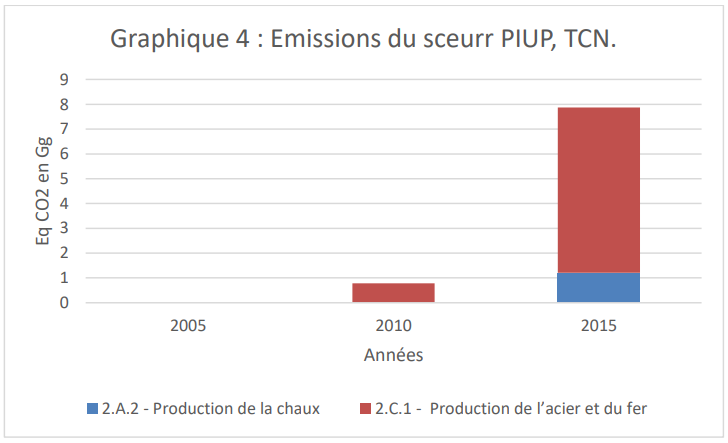
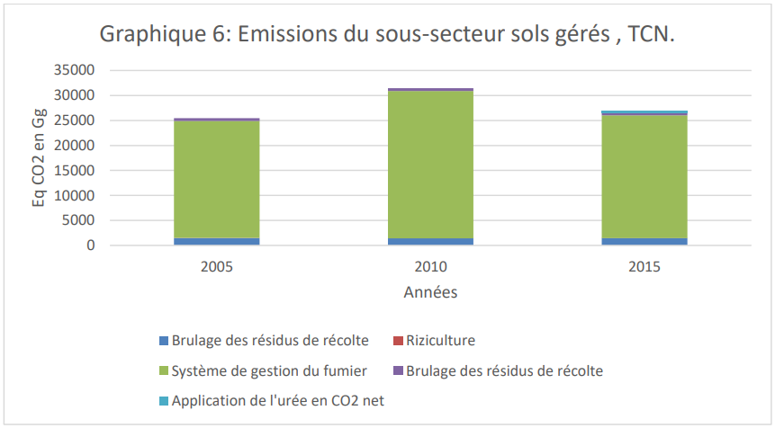
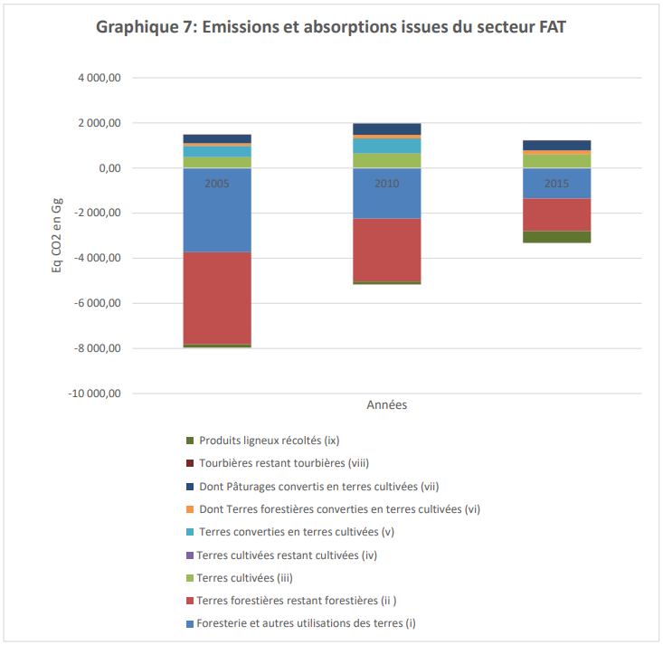
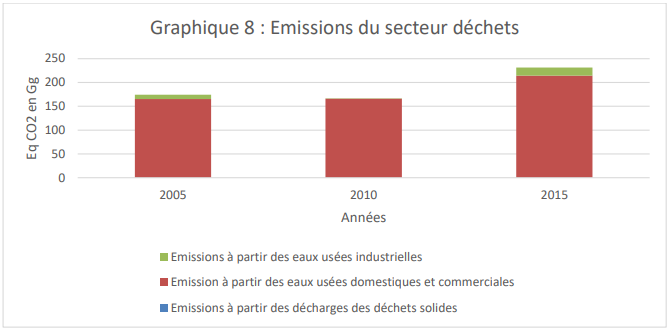
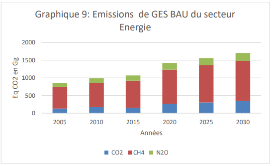
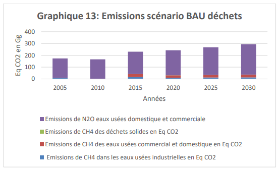
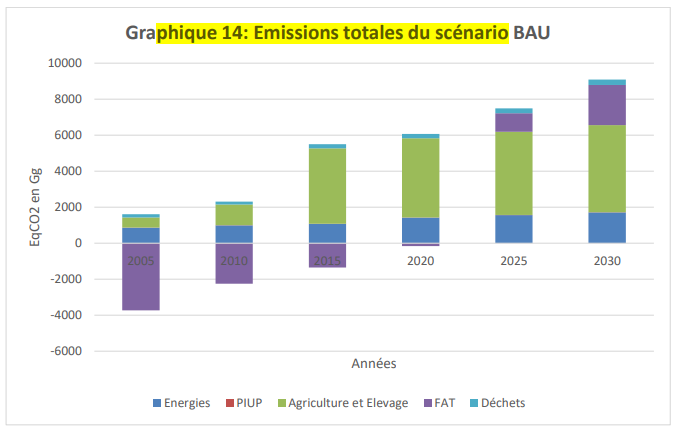

1. Context and planning of the 2015 NDC update
Burundi has made commitments to the international community to contribute to the fight against climate change, through its Intended Nationally Determined Contribution (NDC) submitted in 2015 at the twenty-first Conference of Parties (COP 21 ) of the United Nations Framework Convention on Climate Change (UNFCCC) held in Paris in 2015. It became Determined Contribution in 2018 after the ratification of the Paris Agreement by Burundi.
The Paris Agreement warns of the threat of climate change and indicates that the GHG emission reductions announced in existing commitments are not sufficient to contain global warming below the goal of 2°C. To do this, he invites the Parties to make more efforts for a transition that would make it possible to reach 1.5°C. In this context, it is useful and urgent to see how countries are implementing their commitments by implementing paragraphs 1, 2, 3, 9 and 13 of Article 4 of the Paris Agreement.
The Paris Agreement requires signatory countries to review their NDC every 5 years. In 2020, countries are thus invited to submit revised NDCs based on their 2015 contributions to the UNFCCC secretariat. For countries that have chosen a time horizon of 2030, the year 2020 is a first opportunity to reaffirm their commitment to fight effectively against global warming by communicating their NDC 2015 again in 2020.
Although Burundi has chosen a time horizon of 2030 in the NDC 2015, the Government wished to review its commitments by backing them up with more current data as well as a better alignment of the NDC with the directives of the Agreement of Paris, particularly with regard to the book of rules adopted at COP24, for the NDC 2020. In the NDC 2015, Burundi committed to reducing its greenhouse gas (GHG) emissions by 3% by by 2030 without conditions and 20% under conditions.
The ambition envisaged for the NDC 2020 consists of improving the quality of the NDC 2015, updating the quantitative estimates with more recent data, reassessing the possibilities for mitigation and adaptation by 2020-2030 , to take into account more sectors in the definition of the objectives, to present complementary measures in terms of mitigation and to include the Communication on Adaptation in the NDC.
Burundi's NDC takes into account the IPCC's October 2018 special report on the consequences of global warming after the Paris Agreement. This report establishes the collective ambition to limit global warming "below 2°C compared to pre-industrial levels and to pursue efforts to limit the increase in temperature to 1.5°C".
The Paris Agreement warns of the threat of climate change and indicates that the GHG emission reductions announced in existing commitments are not sufficient to contain global warming below the goal of 2°C. To do this, he invites the Parties to make more efforts for a transition that would make it possible to reach 1.5°C. In this context, it is useful and urgent to see how countries are implementing their commitments by implementing paragraphs 1, 2, 3, 9 and 13 of Article 4 of the Paris Agreement.
The updated NDCs are based on the principle of the voluntary commitment of countries and promote cooperation between countries to achieve, in a coordinated manner, common objectives in the fight against climate change which must lead to a reduction of 45% 1 greenhouse gas emissions by 2030 compared to 2010 levels, in order to stay below the 1.5°C target.
The update of the NDC of the Republic of Burundi promotes transparency, precision, exhaustiveness, comparability and coherence and is in line with the logic of the IPCC report and the conclusions of the Talanoa Dialogue.
Its trajectory is planned in relation to a BAU reference scenario (Business as Usual) which will make it possible to measure Burundi's effort in terms of its mitigation objectives vis-à-vis the change climate.
The sectors taken into account in the NDC are the energy and transport sectors, Industrial Processes and Product Use (PIUP), Agriculture, Forestry and Land Use (AFAT) as well as the waste management. Note that the forest plays an important role in both adaptation and mitigation.
1.1 Reminders on the initial NDC of Burundi (CDN 2015)
Burundi's initial NDC was published in 2015 and took into account aspects related to adaptation and mitigation.
a) Accommodation
Burundi is exposed to the adverse effects of climate change2. These affect all sectors, in particular the Energy, Agriculture and Livestock, Water, Health, Landscapes and Terrestrial Ecosystems sectors.
The adaptation needs identified in the 2015 NDC concerned forestry, human, institutional, technical and financial capacity building and technology transfer. National priorities, policies and programs have been defined in terms of adaptation to climate change (PND Burundi 2018-2027, DOPEAE, PN-PA CC, preliminary PNA etc.).
b) Mitigation
Concerning mitigation, Burundi had committed to reducing greenhouse gas emissions by 23% by 2030 compared to the reference scenario (BAU), which corresponded to a reduction of 3 % (1,958 Gg ECO2) as part of its unconditional target and 20% (14,897 Gg ECO2) as part of its conditional target.
According to the CDN 2015, the establishment of the BAU referred to assumptions related to the growth of the national economy (GDP), population growth as well as the rate of electrification contained in the documents below. above quoted. Some of these documents and many others developed served as the basis for the establishment of the NDC 2020 BAU.
Mitigation objectives have been assessed on the basis of the actions carried out contributing to the mitigation. Accounting and verification of avoided GHG emissions were calculated using the IPCC 2006 DLs. Intermediate targets for 2020 and 2025 were also defined in the 2015 CDN. The 2015 CDN emissions mitigation targets are summarized in Table 1.
Table 1: Emissions by mitigation goals
|
OBJECTIVES |
Percentage |
Emission CO2-eq (Gg) |
|
Unconditional Goal (2030) % |
3% |
1.958 |
|
Conditional target (2030) % |
20% |
14,897 |
|
Unconditional Goal (2025) % |
2% |
1.305 |
|
Conditional target (2025) % |
17% |
9.897 |
|
Unconditional Goal (2020) % |
1% |
653 |
|
Conditional target (2020) % |
11% |
4.897 |
Source: NDC 2015
To achieve the unconditional goal, the following measures were planned:
in the forestry sector, Burundi planned to increase GHG sinks by (re)afforestation of 4ha/year for 15 years from 2016 until 2030.
in the energy sector, Burundi planned to build three hydroelectric power stations in order to increase the electrification rate to 35%, i.e. a production of 45.4 MW in 2030.
To achieve the conditional objective, the following measures were envisaged subject to funding:
in the forestry sector, Burundi has undertaken to (i) reforest 8,000 ha/year, for 15 years from 2016, (ii) replace 100%, by 2030, of all the ovens carbonization and all traditional domestic stoves.
In the agricultural sector, Burundi planned to gradually replace 100% of mineral fertilizers with organic manure by 2030.
The policy and strategic documents taking into account the activities generating greenhouse gas emissions and which were used to formulate the hypotheses, measures and mitigation objectives can be found in Table 2 by sector.
Table 2: Supporting documents for the formulation of hypotheses and objectives
|
Sectors |
Current policy and strategy documents |
|
Energy |
Sector Strategy for the Energy Sector in Burundi (2011); National Environmental Strategy (SNEB, 1997). |
|
Land use and forestry |
National Forest Policy of Burundi (2012); National Strategy and Action Plan on Biodiversity 2013-2020. |
|
Agriculture |
National Agricultural Strategy 2008-2015 (2008); National Sustainable Land Use Strategy (2007); National Action Program to Combat Land Degradation (2005); National Strategy and Action Plan to Combat Land Degradation 2011-2016; National Agricultural Investment Plan 2012-2017. |
|
All sectors |
Vision “Burundi 2025”, Strategic Growth Framework, 2012; First and second national communication on climate change, 2001 and 2010; National Action Plan for adaptation to climate change, 2007; Summary report of greenhouse gas inventories, 2009; Summary report of GHG emissions mitigation studies, 2009; National Climate Change Policy, 2013; National Climate Change Strategy and Action Plan, 2013. |
Source: NDC 2015
The scope and extent of the NDC 2015 can be found in Table 3.
Table 3: NDC 2015 Scope and Extent
|
Sector |
Gas |
Subsectors |
Geographic scope |
|
Energy |
CO2, CH4, N2O |
Fuel combustion activities |
All the territory. |
|
Agriculture/Livestock |
CH4 and N2O |
Domestic Livestock and Managed Soils |
All the territory. |
|
Land use and forestry |
CO2 |
Forest Land |
All the territory |
Source: NDC 2015
The compensation mechanism for the shortfall in the implementation of the proposed NDC was based on international mechanisms relating to the compensation of greenhouse gas emissions (Article 6 AP) and on national legislation in force. vigor. In terms of forests, it was planned to promote the valuation of ecosystem services.
Concerning the conditional objectives, the needs in terms of support were analysed. For the conditional objectives to be achieved, capacity building support for the Ministry's services in charge of the environment and technology transfer was necessary. In addition, financial support was essential.
The cost of the mitigation and adaptation components for the implementation of the prioritized actions listed in the 2015 NDC by unconditional and conditional objectives was estimated at one billion four hundred ninety-three million five hundred eighty-nine thousand dollars Americans (1,493,589,000 USD). Table 4 illustrates the support needed for the implementation of the NDC 2015.
Table 4: Support needed for the implementation of the NDC 2015
|
Program |
Cost in USD (X1000) |
|
1.Adaptation and management of climate risks |
3,719 |
|
2.Mitigation of greenhouse gas emissions and low-carbon development |
1,446,118 |
|
3.Promotion of research and development and technology transfer |
25,787 |
|
4.Capacity Building, Knowledge Management and Communication |
3,465 |
|
5.Reforestation and agroforestry |
10,000 |
|
6.Popularization of improved grinding wheels |
1,500 |
|
7. Dissemination of improved domestic and artisanal stoves |
3,000 |
|
Total |
1,493,589 |
Source: NDC 2015
1.2 New elements contributing to the update
The update of Burundi's NDC takes into account new elements published since the 2015 NDC, both nationally and internationally. At the national level, these are mainly the Third GHG Inventory (2005, 2010 and 2015), the National Plan for the Development of Burundi 2018-2027 (PND BURUNDI 2018-2027), the Guidance Document for the Environment, Agriculture and Livestock (DOPEAE 2020), the National Strategy for the Reduction of Emissions from Deforestation and Forest Degradation and the role of Conservation of forest ecosystems, Sustainable Management and Enhancement of Forest Carbon Stocks (REDD+) 2019, policies and plans related to industry, transport, energy, health and gender.
At the international level, these are essentially the decisions resulting from COP 24 in 2018, which was held in Katowice, Poland in December 2018 and the ICTU which aims to guide countries when updating of their CDN. The Katowice package establishes Modalities, Procedures and Guidelines which specify how the Enhanced Transparency Framework (TRF) is implemented. It sets out the essential procedures and mechanisms that will operationalize the Paris Agreement.
The updated NDC is also in the implementation phase of the Paris Agreement and specifically paragraphs 1, 2, 3, 9 and 13 of its article 4. In addition, the update takes into account Decision 4 /CMA. 1 Annex I relating to the ICTU (Information, Clarity, Transparency and Under standing) which highlights Information on Clarity, Transparency and Understanding of NDCs and integrates cross-cutting issues such as gender and social inclusion.
1.2.1 GHG inventory and BAU projections
After the submission of the 2015 NDC to the UNFCCC Secretariat, the Third Communication was developed and validated in 2019 under the coordination of the Ministry in charge of the environment with the support of the Global Environment Facility. It is based on the 3rd national GHG inventory. The methodology for calculating GHG emissions and absorptions followed the 2006 IPCC Guidelines.
This inventory concerns the years 2005, 2010 and 2015.
The greenhouse gases considered are carbon dioxide (CO2), methane (CH4) and nitrous oxide (N2O).
The sectors covered are (i) energy; (ii) Industrial Processes and Product Use (IPUP);
(iii) Agriculture, Forestry and other Land Use (AFOLU) and (iv) waste management.
The TCN contains projections of emissions up to 2050 if no action is taken to mitigate GHG emissions. These projections also show mitigation scenarios based on GHG mitigation policies, measures, strategies and plans planned and implemented in Burundi.
1.2.2. Analysis of the implementation of the NDC 2015.
Prior to the update of the NDC, an analysis of the implementation of the 2015 NDC was carried out. This analysis aimed to assess the progress made in the implementation of the first NDC in relation to the Country's commitments in the reduction of greenhouse gas emissions by unconditional and conditional objectives.
Concerning the unconditional objective, it was planned in the forestry sector to afforest 4,000 ha per year for 5 years, i.e. 20,000 ha for 5 years and to build three hydroelectric power stations in order to increase the rate electrification at 35%.
The degree of implementation of the unconditional actions of the NDC 2015 in the forest and energy sectors in 2020 is summarized in Table 5.
Table 5: Degree of implementation of the unconditional actions of the NDC 2015
|
Sector |
Planned actions |
Actions carried out |
Achievement rate in % |
|
Forest |
Above 20,000ha in 5 years |
11033ha |
55%3 |
|
Energy |
Build 3 hydroelectric plants |
4 plants under construction |
0 |
|
Total |
Source: NDC Evaluation Report 2015
Concerning the conditional objective, it was planned (i) in the forestry sector to afforest 8,000 ha per year for 5 years, i.e. 40,000 ha from 2016 to 2020, (ii) in the forestry sector energy to replace 100%, by 2030, of all traditional carbonization furnaces and all traditional domestic cookers and (iii) in the agriculture sector, to gradually replace 100% of mineral fertilizers with organic manure, by 2030. Results by proposed conditional actions can be found in Table 6.
Table 6: Degree of implementation of NDC 2015 conditional actions in 2020
|
Sector |
Planned actions |
Actions carried out |
Achievement rate in % |
Cost of action4 |
|
Forest |
Above 40,000 ha in 5 years |
29684 ha |
74% |
4462600 |
|
Energy |
Replace 100%, by 2030, all traditional carbonization furnaces |
DN |
DN |
1500000 |
|
Replace 100%, by 2030, in all homes traditional domestic stoves |
DN |
DN |
DN |
|
|
Agricultural |
Gradually replace mineral fertilizers by 100% with organic manure, by 2030 |
DN |
DN |
DN |
|
Total |
Source: NDC Evaluation Report 2015
In mitigation, the overall cost of implementing actions to reduce greenhouse gas emissions in all sectors per conditional objective was estimated at 1,446,118,000 USD...
The analysis of the 2015 NDC has made it possible to highlight certain shortcomings in the context of its implementation and to draw lessons for the 2020 update of the NDC.
The shortcomings identified are as follows:
Absence of a national coordination framework for the implementation of NDCs.
Lack of indicators for monitoring and evaluating the implementation of the NDC.
Weak capacity for the mobilization of NDC implementation resources by unconditional and conditional objectives.
Absence of a national climate finance MRV system.
Insufficient capacity building and technology transfer actions.
Low awareness of ownership of the NDC by all stakeholders.
The lessons learned from the implementation of the 2015 NDC are as follows:
The 2015 NDC is very ambitious and contains certain commitments that are not or are difficult to achieve within the planned timeframe.
The measurement, reporting and evaluation of mitigation and adaptation actions are difficult to achieve due to the lack of indicators and precise information on the sectoral contributions of implementation and the existence of a MRV system for CDN.
Suggestion for improving CDN 2020:
Taking into account the shortcomings observed in the NDC 2015 and its implementation as well as Burundi's commitment to increase its ambitions, new elements have been incorporated into the NDC 2020. These include:
The integration of the waste and industry sectors (PIUP), and the transport sub-sectors.
Taking into account aspects related to gender and social inclusion in accordance with national policies in force.
The development of a logical framework with measurable monitoring indicators for the monitoring and evaluation of the implementation of priority mitigation and adaptation actions listed in the NDC 2020.
The establishment of an inclusive national coordination and monitoring framework for the implementation of the NDC.
The awareness of all the actors involved (political decision-makers, planners, local authorities and grassroots communities while respecting the gender dimension) in the implementation of the NDC for its appropriation.
The integration of all the actors involved in planning with a view to taking climate change into account in relation to the NDC when setting up strategic development tools (strategies and sectoral policies).
Strengthening the institutional and technical capacities of sectoral entities with sufficient financial resources and appropriate tools for effective implementation of the NDC with a mechanism for monitoring, reporting and verification of REDD+ and other actions in terms of climate change as well as a national research and development program on adaptation to climate change.
The formulation of projects in accordance with the requirements of the various financing mechanisms and the creation of a strategic framework favorable to the mobilization of financing, following the example of several African countries Parties to the Convention, which have created a National Climate Change Fund.
Improving the data collection system.
Integration of NDC programs in sectoral plans and policies.
The consideration of the ICTU in the NDC 2020.
1.2.4. National Plans, Policies and Strategies.
(i) Burundi Economic Development Plan
The first document published since the 2015 NDC is the National Development Plan of Burundi 2018-2027 made public in 2018. This plan was produced in a context where Burundi is experiencing major changes in the areas of administrative governance and economy with a major challenge related to the structural transformation of the national economy. It comes to face the challenges of socio-economic development. These challenges are obvious and must be resolved by the said plan for the decade 2018-2027.
Burundi's National Development Plan 2018-2027 (PNB) is part of a development plan based on a new dynamic of transformation of economic, demographic and social structures. This scheme generates multiplier effects that are as long-lasting on the improvement of economic growth as on the average per capita income. It will enable the satisfaction of basic needs, poverty reduction, human capital development, environmental sustainability and social equity.
The GNP thus constitutes a tool of strategic orientation on which the sectors will have to build their policies and action plans to contribute positively to the increase in the gross domestic product (GDP). This plan is intended to be the foundation for strong and inclusive growth from 2018 in order to enable Burundi to reach, by 2027, the level of emerging countries. Its challenge is to create the conditions necessary for lasting peace and stability for the long-term structural transformation of the economy characterized by double-digit, sustainable and equitable growth.
The implementation of the PND is based on five strategic orientations, namely (i) revitalizing the growth sectors; (ii) develop human capital; (iii) protecting the environment, adapting to climate change and improving land use planning, (iv) strengthening democracy, governance, the rule of law and safeguarding national sovereignty, (v) strengthening resource mobilization mechanisms and develop cooperation and partnership.
The updated NDC is one of the tools for implementing the National Development Plan and still takes into account the 2030 Sustainable Development Goals.
(ii) National policies and strategies.
To mitigate the adverse effects of the impacts of climate change, the Government of Burundi has defined political orientations, in particular through the PND 2018-2027, the Vision 2025 published by Burundi in 2011 and the various sectoral policies such as the National Water Strategy, National Water Strategy, National Agricultural Strategy (NAS), National Strategy and Action Plan on Biodiversity 2013-2020; the National Forest Policy and the Energy Policy Letter and its implementation strategy. In addition, it has developed and adopted strategies with action plans specific to climate change, including:
The National Policy and Strategy and action plan on climate change.
The National Communication Strategy for adaptation to climate change.
The National Action Plan for Adaptation to Climate Change (PANA, 2007).
National Communications on Climate Change.
The National Forest Strategy, 2021 replacing that of (2012).
The National REDD+ Strategy, 2019, the National Strategy for Sustainable Land Use (2007).
The National Strategy and Action Plan to Combat Land Degradation 2011-2016.
The National Agricultural Investment Plan 2012-2017.
The Preliminary National Adaptation Plan (2020).
The implementation of the updated NDC contributes to the achievement of the objectives of the various documents of plans, policies and strategies mentioned above in terms of mitigating greenhouse gas emissions and in terms of adaptation to the impacts of climate change.
1.2.2 Presentation of information according to Decision 4/CMA.1, annex I
Information on Clarity, Transparency and Understanding of the NDCs (ICTU in English Information, Clarity, Transparency and Under standing) has been taken into account in the update of the NDC by focusing on the following points:
Quantifiable information about benchmarks.
Timelines and/or implementation periods.
Scope and field of application.
The planning process.
Assumptions and methodological approaches.
How the Party considers its nationally determined contribution to be equitable taking into account its national circumstances.
How the NDC contributes to the achievement of the objective of the Convention as set out in its Article 2.
.At the international level, the IPCC's special report on the consequences of global warming of 1.5oC has been published. This special report was approved at the 48th meeting of the IPCC in Incheon, South Korea and has been published since 8 October 2018.
It served as the scientific basis for the Talanoa Dialogue concluded during the COP 24 in December 2018 in Katowice, Poland to take stock of the collective efforts of Parties to achieve the long-term goal of the Paris Agreement and to encourage countries to make new, more ambitious commitments by 2020.
The conclusions of the Talanoa Dialogue call on all countries to submit strengthened climate plans (Nationally Determined Contributions - NDCs) to the United Nations by 2020.
They encourage the Parties to pay specific attention to the role of the transport sector (including international aviation and shipping), the financing of the transition, the role of public and private investments, the carbon price in this context (taking into account socio-economic aspects), and the synergies of transition towards a circular economy which aims for the sober and efficient management of resources, etc.
1.3 CDN refresh planning
1.3.1 Institutional commitment
The Ministry of the Environment, Agriculture and Livestock is the institutional coordination framework which, through its administrative and technical structure, is in charge of the NDC 2020. To this end, it has set up a national commission responsible for monitoring the update of the CDN 2015. It is made up of senior executives from the various sectors emitting GHG emissions, including the AFOLU, Energy, Transport and Processes sectors Industrial and Uses of Products and Wastes. Executives from non-emitting but cross-cutting sectors, namely health and gender, were also included in the discussions.
In close collaboration with the UNDP, this commission is responsible for monitoring the process of updating the NDC from the recruitment of the Bureau and the development phases (validation of the methodology, organization of retreats, technical sessions and consultation workshops with stakeholders, validation at different stages of the document and submission of the updated NDC for adoption and approval).
On a technical level, the NDC 2020 was carried out by a consortium of 10 national experts assisted by an international consultant.
1.3.2. Strengthened ambition of CDN 2020.
Burundi is actively involved in the NDC process and, as early as 2015, it transmitted a first NDC with mitigation objectives for 2030. However, in 2020, although the country could content itself with resubmit its 2015 NDC (since it went until 2030), Burundi embarked on an ambitious updating project.
The increase in ambition for the NDC 2020 consists mainly, on the one hand, of taking into account more sectors in the definition of objectives and complementary measures in terms of mitigation and, on the other hand, of including the Communication on Adaptation in the NDC.
The inclusion of actions concerning the Transport, PIUP and Waste sectors in the NDC 2020 increases the ambition in terms of mitigating GHG emissions.
This NDC therefore represents a progression compared to the previous NDC, because the coverage of emissions in terms of sectors has been extended to all the categories estimated in the GHG inventory.
In addition, the NDC 2020 takes into account the gender dimension and therefore reinforces its character of equity. As the scope of implementation of the NDC 2020 is national, its implementation will be fair and just according to the diverse backgrounds and lifestyles of local communities.
Burundi is committed to continuing to make efforts to reduce GHG emissions. It will evolve towards the objective of reducing or limiting emissions on an economy-wide scale and increasing carbon stocks, in particular through the implementation of the National Development Plan 2018-2027, and the Orientation of the Environment, Agriculture and Livestock Policy as well as other sectoral policies.
The NDC 2020 contributes to paragraph a) of article 2 of the AP because it plans to implement, from 2021 to 2030, projects/programmes to reduce greenhouse gas emissions. It will also contribute to the implementation of paragraph 1 of article 4 of the PA. This is how it provides political, strategic measures and mitigation plans/programs and adaptation plans with beneficial effects for mitigation.
The goal is to achieve the desired global GHG cap in accordance with the best available science. Therefore, it will be possible to achieve a balance between anthropogenic emissions by sources and anthropogenic removals by sinks of greenhouse gases during the second half of the century, on the basis of equity, and in the context of sustainable development and the fight against poverty.
The NDC 2020 will be executed from January 1, 2021 and will end on December 31, 2030. From 2020 to 2025, a biannual assessment will be made to see the progress made in reducing greenhouse gas emissions from 2021 to 2025.
1.3.3. Participatory and inclusive approach.
The 2020 update of the NDC was organized with a real effort to ensure a participatory and inclusive approach during the planning, development and verification stages. It took into account the involvement of all stakeholders including state institutions, the private sector, non-governmental organizations and grassroots community associations.
The UN Agencies and the Technical and Financial Partners have also been concerted to give their contribution within the framework of the process of updating the NDC 2020.
For the 2020 update of the NDC, the consultations also gathered the opinions of civil society organizations5 and researchers from the University. The aim was to involve and involve the private sector, civil society organizations, local communities, young people and the Batwa in the formulation and evaluation of mitigation projects. Particular emphasis was placed on the participation of women and indigenous peoples assimilated to the Batwa during the consultation process.
A total of 5 workshops bringing together all the stakeholders were organized in order to collect the data, define the actions to be considered in the unconditional and conditional scenarios of the NDC, and validate the methodological approaches and the results.
1.3.4. Capacity building and technology transfer
During the implementation of the 2015 NDC, capacity building for executives of sectoral institutions was carried out, although in very limited numbers. These reinforcements focused on tools and methodologies for greenhouse gas inventories and on studies of vulnerability, adaptation to climate change and mitigation of GHG emissions. Capacity building also focused on project financing procedures and mechanisms. However, the need for capacity building in these areas remains a national priority, because the number of reinforced staff is still insufficient and the mastery of these tools is still weak in all sectors.
It is within this framework that the NDC 2020 expresses a continuous need to strengthen a large number of stakeholders involved in mitigation at the level of the various sectors in order to remedy the following situations:
Limited availability of quality data.
Low technical knowledge for projections and analysis of mitigation measures.
Difficulty in training technical and scientific personnel due to the lack of specialized training institutions in the field of climate change on site and the limits of cooperation for training abroad.
As research and development in the field of climate change remains incomplete and the technical and financial means limited, the NDC 2020 proposes technology transfer actions to build capacity.
The most important actions are:
Strengthen sectoral institutions on the establishment of reliable databases on climate change.
Support research and development in the field of climate.
1.3.5. Schedule of work done
The work of updating the CDN took place over 5 months. The work schedule can be found in Table 7.
|
Planned activities |
|
|
1 |
Interview of PREFED/CAREPD with the Program Specialist/Head of the Unit for Sustainable Development and Inclusive Growth at the UNDP, the international consultant and the authorities of the Ministry of the Environment, Agriculture and Livestock . |
|
2 |
Prepare the methodological note, the work plan and a timetable for updating the 2015 NDC in collaboration with the international experts responsible for monitoring the update. |
|
3 |
Participate in weekly meetings organized by international experts from April 2021. |
|
4 |
Prepare the report on the implementation of the 2015 NDC of the Republic of Burundi. |
|
5 |
Validate the report on the implementation of the 2015 NDC of the Republic of Burundi by the Technical Commission Responsible for monitoring the update. |
|
6 |
Participate in a workshop to present (i) the assessed NDC and the draft draft NAP, (ii) a methodological note, the work plan and a timeline for updating the NDC and (iv) ) validation of the questionnaire for the collection of sectoral data specifically taking into account the aspects of adaptation/mitigation to Climate Change, the integration of gender, youth, vulnerable groups and capacity building needs as well as the validation of the report on the implementation of the 2015 NDC of the Republic of Burundi. |
|
7 |
Organize consultations with stakeholders for data collection and document collection and conduct surveys on energy consumption needs and use of fertilizers/pesticides. |
|
8 |
Analysis and processing of data collected and preparation of sector reports and drafting of sector reports taking into account adaptation/mitigation aspects. |
|
9 |
Integrate into these sectoral reports the observations made by the targeted experts. |
|
10 |
Organize 4 regional consultation workshops. |
|
11 |
Drafting of the provisional document of the updated NDC of Burundi by the Experts of the Consortium. |
|
12 |
Provisional NDC 2020 document sent to UNDP. |
|
13 |
Analysis of the draft document by international experts. |
|
14 |
Comments on NDC 2020 sent to National Experts by International Experts. |
|
15 |
Inclusion of comments from international experts in the consolidated document. |
|
16 |
Retransmission of the consolidated document to the international experts for final comments. |
|
17 |
Transmission of the latest observations to the experts in order to integrate them into the consolidated NDC document. |
|
18 |
Organization of a national validation workshop for the CDN 2020. |
|
19 |
Incorporation of comments from participants in the validation workshop into the updated Burundi NDC document. |
|
20 |
Consolidated NDC 2020 document sent to International Experts for final comments and editing. |
|
21 |
Forward the consolidated document to national experts. |
|
22 |
Prepare a presentation text of the updated NDC to the Government. |
|
23 |
Adoption of the NDC 2020 by the Council of Ministers. |
|
24 |
Approval of the CDN by the National Assembly. |
|
25 |
Transmit the updated CND document from the Republic of Burundi to the UNFCCC Secretariat. |
1.4 Burundi NDC 2020
Table 9 provides information on the clarity, transparency and understanding of the Republic of Burundi NDC 2020.
Table 8: Information on Clarity, Transparency and Understanding of NDC 2020.
|
1. Planning process |
|
|
a. Information on the planning processes the Party followed to develop its nationally determined contribution and, if available, the Party's implementation plans, including, as appropriate on : |
|
|
i. National institutional arrangements, public participation and collaboration with local communities and indigenous peoples, taking into account gender issues; |
Institutional arrangements: The Ministry of the Environment, Agriculture and Livestock is the institutional framework in charge, through its technical administrative structure, of updating the CDN 2020. To this end, it has set up a national commission responsible for monitoring the update of the CDN 2015. It is made up of senior executives from the various sectors (AFAT, Energy including transport, PIUP and Waste). Representatives of the sectors involved in related themes (Health, Gender) have also been integrated into the Commission. In close collaboration with the UNDP, this commission is responsible for monitoring the process of updating the NDC from the recruitment of the Bureau and the development phases (validation of the methodology, organization of retreats for technical sessions and consultation workshops with stakeholders and step-by-step validation of the document, submission of the updated NDC for adoption and approval). Technically, the NDC 2020 was produced by a consortium of 10 national experts (6 sector experts, an economist, a gender specialist, a health expert and a climate expert) assisted by an international consultant. Participatory aspect The updating process was based on numerous exchange workshops (data collection, selection of actions, approval of methodologies, verification and approval of results). These workshops aimed to ensure the participation and involvement of all technical stakeholders and civil society with the involvement of local communities, indigenous peoples, the dimension taking into account gender issues and social inclusion. The workshops also aimed to communicate on the actions selected and thus ensure their implementation by the stakeholders. The NDC 2020 was approved by the authorities of Burundi before being disseminated to UNDP. |
|
ii. Contextual issues, including, among others, as appropriate: |
|
|
- The national situation, including geography, climate, economy, sustainable development and poverty eradication |
Burundi is a country in Central Africa with an area of 27,834 km2. It is located between 28° 50 and 30° 54 East Longitude between the Congo Basin and the eastern highlands and between 2° 30 and 4° 28 South Latitude, at the crossroads of the routes of Central Africa, Eastern Africa and even Southern Africa. The country experiences a hot and humid tropical climate influenced by the altitude and characterized by the alternation of a rainy season (October to May) and a dry season (June to September). Its rainfall and temperature are strongly influenced by the relief, the altitude of the country (772-2670 m) and by climate change. The average annual rainfall varies from 750 mm in the North-East of Burundi to more than 2000 mm in the mountainous zone. The highest annual average temperature is 24.7°C between 2006-2015 recorded in the natural region of the Imbo plain, while the lowest is 16.6°C between 2006-2015 recorded in the natural region of Mugamba . From a socio-economic point of view, Burundi has approximately 12.3 million people in 2020, more than 90% of whom live in rural areas and 51% are female. Being among the Least Developed Countries (LDCs), its annual per capita income is estimated at 280 USD and its economy is essentially based on agriculture. With a density of 480.99 people/km², the population growth of 2.4% puts pressure on land resources, water resources and worsens the situation of deforestation and deforestation. According to the TCN, the sectors that emit the most are agriculture, energy and waste with emissions of 4186.21 Eq CO2 in Gg, 1072.4 Eq CO2 in Gg and 230.73 respectively. CO2 eq. For other sectors, GHG emissions are insignificant. |
|
-Best practices and experience from the development of the nationally determined contribution |
Best practices and experience from developing:
|
|
- Other contextual aspirations and priorities recognized when joining the Paris Agreement |
The updated NDC 2020 is in harmony with the objective of the Paris Agreement, in its provisions of article 4 paragraphs 2 and 3, article 4, article 5, article 6, paragraphs 1 and 2 and Article 7 paragraphs 1 and 2. Developed countries should act in accordance with the provisions of Article 9 of the Paris Agreement. Compliance with paragraph 4 of Article 9 of the Paris Agreement which highlights areas of cooperation and facilitation and aims to enhance understanding, action and support. These areas include early warning systems, emergency preparedness, etc. |
|
b. Specific information applicable to Parties, including regional economic integration organizations and their member States, that have agreed to act jointly pursuant to paragraph 2 of Article 4 of the Paris Agreement, including the Parties that have decided to act jointly, and the terms of the relevant agreement, in accordance with paragraphs 16 to 18 of Article 4 of the Paris Agreement |
Not applicable The updated NDC is not developed within the framework of regional economic integration organizations and their member states to act jointly pursuant to paragraph 2 of Article 4 of the Paris Agreement. Paragraphs 16, 17 and 18 do not relate to the updated NDC of the Republic of Burundi. |
|
c. How the Party's development of its nationally determined contribution has been informed by the results of the global stocktake, in accordance with paragraph 9 of Article 4 of the Paris Agreement |
The steps that were taken for the NDC 2020 were not informed by the global stocktake, as the first global stocktake on climate action will come out in 2023. However, the results of the global stocktake will be taken into account for the update of the NDC 2020. |
|
d. Each Party having a nationally determined contribution under Article 4 of the Paris Agreement, which consists of adaptation measures and/or economic diversification plans resulting in beneficial effects in the field of mitigation in accordance with paragraph 7 of Article 4 of the Paris Agreement, |
Not Applicable |
|
6. How the Party considers its nationally determined contribution to be fair and ambitious given its national circumstances |
|
|
a. How the Party considers its nationally determined contribution to be fair and ambitious given its national circumstances |
During the development of the NDC, the analysis of the vulnerability of the sectors (Agriculture, forests and Other lands, energy, health, PIUP) was made. The negative impacts due to climate change have been identified and mitigation and/or adaptation measures to deal with these impacts have been identified by sector. The development of the CDN 2020 used the most recent data from the TCN and other sectors were taken into account such as the Waste, PIUP and transport sectors. |
|
b. Equity considerations |
Gender and social inclusion are taken into account in the NDC 2020. In addition, the actions included therein have been identified on the basis of national policy and strategy documents. |
|
c. How the Party has taken into account paragraph 3 of Article 4 of the Paris Agreement6 |
The NDC 2020 raised the ambition compared to the previous NDC by taking into account actions in sectors and sub-sectors not included in the NDC 2015: transport, Waste. In addition, the themes of health, gender and social inclusion have been integrated into the prioritization of actions. The 2020 NDC represents an improvement over the previous NDC, as the coverage of emissions in terms of sectors has been extended to all sectors and gases estimated in the most recent GHG inventory. The CDN 2020 has defined specific indicators for monitoring and evaluation and recommends a capacity building plan for better ownership by the various stakeholders. |
|
d. How the Party has taken into account paragraph 4 of Article 4 of the Paris Agreement7 |
Although Burundi is not an emitting country, it develops through its policies actions to mitigate GHG emissions. |
|
e. How the Party has taken into account paragraph 6 of Article 4 of the Paris Agreement8 |
Burundi is strengthening its efforts in terms of mitigation through the inclusion in the new NDC of national actions to reduce GHG emissions and increase carbon stocks. For example, the development of new and renewable energies (solar, wind, hydroelectric power stations under construction, etc.), the increase in the internal budget to finance mitigation and adaptation measures, but also policies such as that the National Development Plan, 2018-2027 and the Environment, Agriculture and Livestock Planning Policy, |
|
7. How the nationally determined contribution contributes to the achievement of the objective of the Convention as set out in its Article 2 |
|
|
a. How the nationally determined contribution contributes to the achievement of the objective of the Convention as set out in its Article 29 |
The NDC 2020 contributes to the objectives of the Convention and the Paris Agreement by accelerating low-carbon development. |
|
b. How the nationally determined contribution contributes to Article 2(1)(a) and Article 4(1) of the Paris Agreement10 |
- The revised NDC contributes to PA Article 2(a). It plans to implement projects/programs to reduce greenhouse gas emissions from 2021 to 2025. -The revised NDC will also contribute to the implementation of Article 4 paragraph 1 of the PA, as it provides policy, strategic measures and mitigation plans/programmes. Existing policies take into account the climate plan and the SDGs with the aim of developing in a low-carbon way to contribute to the global objective. |
2 The objectives in terms of mitigation
2.1 National GHG inventory
Burundi has published three national communications on climate change. He submitted them to the Secretariat of the United Nations Framework Convention on Climate Change. Each of these communications is based on a greenhouse gas inventory.
The third national climate communication, published in 2019, is based on the third GHG inventory which was published in 201811. The latter concerns the years 2005, 2010 and 2015.
The third national climate communication and its GHG inventory are selected as reference documents for updating the NDC 2020.
2.1.1 Perimeters
Under the supervision of the Ministry in charge of the environment, greenhouse gas inventories are carried out by the Burundian Office for the Protection of the Environment (OBPE).
The 3rd national GHG inventory used in the NDC 2020 takes into account the sectors of energy (including transport), Agriculture, Forestry and other Land Use (AFOLU), Industrial Processes and Uses of Products (PIUP) and waste.
The possible exclusions of certain sub-sectors (sources not present in Burundi or whose emissions are not estimated in the latest national GHG inventory) are presented in the sectoral paragraphs below.
The gases whose emissions or absorptions are accounted for are listed in table 10.
Table 9: Sectors and Gases counted.
|
Sectors |
Gas |
|
Energy |
CO2, CH4, N2O |
|
Agriculture and Livestock |
CO2, CH4, N2O |
|
FAT |
CO2, CH4, N2O |
|
PIUP |
CO2, CH4, N2O, |
|
Waste |
CH4, N2O |
2.1.2 Fluorinated gases (HFCs, PFCs and SF6 and NF3
These gases are not accounted for in the third greenhouse gas inventory and are therefore not considered in the NDC 2020.
2.1.3. Methodology
The methodology adopted is based on the 2006 IPCC Guidelines for National Greenhouse Gas Inventories. GHG emissions and removals were calculated using the IPCC 2006 inventory software using the Tier 1 method.
2.1.3.1 Energy
The calculation of greenhouse gas (GHG) emissions was performed using the Tier 1 method of the 2006 IPCC Guidelines and the IPCC Tools software.
For this level of method, the necessary data that can be used are the activity data on the quantity of fuels burned (activity data) and the default emission factors for each fuel from the IPCC 2006 TGs.
In calculating emissions from the energy sector, the activity data used come from the energy industries, manufacturing industries, construction, trade, agriculture, forestry, fishing, residential and transport sub-sectors.
In the residential sub-sector, the fuels used are wood energy, bagasse12 made up of vegetable or agricultural waste for cooking, heating and lighting and kerosene for lighting by rural households. As for urban households, the fuels used are charcoal for cooking and partially kerosene for lighting.
In the transport sub-sector, the fuels used are diesel and gasoline.
Emissions from the combustion of vegetable or agricultural waste, which are used mainly in rural households, have not been quantified due to lack of data.
2.1.3.2 Agriculture and Livestock
The emissions calculated in this sector relate to domestic livestock (enteric fermentation and manure management) and managed soils (burning of harvested biomass residues, emissions from rice cultivation, direct N2O emissions from managed soils and CO2 emissions from liming and urea application).
The methodology used in the 3rd GHG inventory for the calculation of GHG emissions in the agriculture sector is level 1 and the default parameters of the 2006 IPCC GLs.
IPCC software from the IPCC was used to calculate methane (CH4) and nitrous oxide (N2O) emissions.
The Agriculture and Livestock sector includes the sub-sectors and categories listed in Table 11.
Table 10: Sub-sectors and categories of the agriculture and livestock sector
|
Subsector |
Categories |
|
Domestic Livestock |
Enteric fermentation, |
|
Manure Management Systems |
|
|
Cultivated land |
Combustion of crop residues |
|
Rice farming |
|
|
Application of synthetic fertilizers for all crops |
|
|
Managed soils (liming, urea-based fertilizers), |
For livestock, the input data focuses on the primary characterization of the livestock to classify the animals according to what is applicable to the country taking into account the species and categories of livestock.
For managed soils, the activity data is the amount of biomass burned during pre-harvest fire removal of leaves from the area occupied by sugar cane. For rice growing, the activity data collected in the field concern the annual rice harvest areas and the time of the vegetative cycle. For the application of fertilizers and liming, the input data are respectively the quantities of fertilizer and lime used.
Daily monitoring of areas from which wood products are harvested (case of SOSUMO) is done.
2.1.3.3 Industrial Processes and Product Use (IPUP)
In the 3rd GHG inventory of Burundi, the Tier 1 methodology used for the calculation of emissions is that recommended by the 2006 IPCC guidelines in which the activity data were multiplied by emission factors by default. Calculations were made using IPCC software.
The emission sources taken into account are the production of lime (sub-sector of the mineral industry) and the production of iron and steel (sub-sector of the metallurgical industry). has no chemical industries. Emissions related to the non-energy use of fuels are not estimated due to lack of data.
The emissions of fluorinated gases and NF3 linked to the use (domestic or industrial) and the manufacture of these gases are not estimated on the one hand, because there are no national data making it possible to to estimate emissions from the use of products, and secondly because there are no industries that produce these products in Burundi.
In the 3rd GHG inventory of Burundi, the FAT sector includes the sub-sectors forest land, cropland, pasture, wetland and peatland.
Activity data are areas of both public and private forest land, areas of pasture, cropland and peatland.
After data collection and processing, the method used to calculate GHG emissions is that described in the 2006 IPCC Guidelines. The data conversion factors contained in FRA 2015 were used.
The calculations of emissions/removals were carried out using the IPCC 2006 software by introducing the processed activity data.
Based on the data entered, the software calculates emissions from biomass stock change, wetland management, forest fires and harvested wood products and sums the emissions of all categories of Land Allocation and Use (FAT).
For the FAT sector, in addition to these emission sources, the rate of deforestation and forest degradation, the rate of wood consumption, the development of wood-saving technologies are to be considered.
.Continuous monitoring and evaluation for the implementation of projects/programmes/measures designed to mitigate emissions and subsequent removals due to natural disturbances on working lands is done.
2.1.3.5 Waste
In Burundi's 3rd GHG inventory, the methodology for calculating emissions in this sector was based on the 2006 IPCC Guidelines for National GHG Inventories as well as the 2006 IPCC software. no country-specific emission factor, estimates were based on Tier 1 methods using mainly activity data and default parameters.
The categories of solid waste considered in the context of Burundi's third GHG inventory are municipal solid waste (household and commercial). Biomedical waste was not taken into account in the calculation of emissions due to the lack of data related to solid waste dumped in pits and incinerated. The calculations of emissions from solid waste only concerned the cities of Bujumbura and Gitega and certain markets. Regarding wastewater, discharges from households, commerce and industry are taken into account.
2.1.4. Results
Table 12 and Figure 1 summarize the results of Burundi's 3rd National GHG Inventory. For the conversion into CO2 equivalents, in Gg, the values of the Global Warming Potential (GWP) corresponding to a period of 100 years from the Second Assessment Report (SOD) of the IPCC were used. It is 21 for CH4 and 310 for N2O.
Table 11: National GHG emissions in Gg CO2eq by sector
|
Sectors |
2005 |
2010 |
2015 |
|
Energy |
858.34 |
988.41 |
1069.43 |
|
Industrial Processes and Product Use |
0 |
0.78 |
7.84 |
|
Agriculture and Livestock |
567.41 |
1150.37 |
4186.21 |
|
Forestry and other Land Use |
-3732.43 |
-2249.77 |
-1348.48 |
|
Waste |
174.83 |
165.32 |
230.7 |
|
Total national emissions with removals |
-2130.22 |
56.51 |
4148.06 |
|
Total emissions without removals |
1602.21 |
2306.28 |
5496.54 |
Source: 3rd National GHG Inventory (TCN)
Graph 1: Summary of GHG emissions, TCN.
The analysis of the summary results of emissions with absorptions shows that the absorption capacity has greatly decreased in Burundi, resulting in an increase in greenhouse gas emissions. All of the emissions recorded during the third inventory show that they come from agriculture, in soils managed by manure management systems.
2.1.4.1 Energy sector
Table 13 presents the results of emissions from the energy sector for the three types of gas (CO2, CH4, N2O) for the years 2005, 2010 and 2015.
Table 12: Global GHG emissions in Gg CO2e of the Energy sector
|
SECTORS OF ACTIVITY |
2005 |
2010 |
2015 |
||||||
|
CO2 |
CH4 |
N2O |
CO2 |
CH4 |
N2O |
CO2 |
CH4 |
N2O |
|
|
1.Energy Industry |
0.78 |
0.02 |
0 |
1.36 |
0.02 |
0 |
0.92 |
0.02 |
0 |
|
2. Ind. Manufacturing and Construction |
30.25 |
0 |
0 |
47.91 |
0 |
0 |
45.48 |
0 |
0 |
|
3.Transportation: |
74.46 |
0.02 |
0 |
81.25 |
0.02 |
0 |
69.88 |
0 |
0 |
|
Aerial |
67.50 |
- |
- |
1.39 |
- |
- |
0.96 |
- |
- |
|
Road |
6.28 |
0.02 |
0.00 |
79.20 |
0.02 |
0.00 |
68.42 |
0.00 |
0.00 |
|
Maritime |
0.68 |
- |
- |
0.66 |
- |
- |
0.50 |
- |
- |
|
4. Trade and Institution |
11.68 |
0.52 |
0.01 |
20.46 |
0.55 |
0.01 |
10.63 |
0.62 |
0.01 |
|
5.Residential |
6.28 |
28.30 |
0.37 |
8.71 |
31.86 |
0.42 |
11.41 |
35.87 |
0.47 |
|
6.Agriculture / forestry and fishing |
9.76 |
0.06 |
0.00 |
12.49 |
0.07 |
0.00 |
13.93 |
0.08 |
0.00 |
|
TOTAL emissions |
133.22 |
28.92 |
0.38 |
172.19 |
32.52 |
0.43 |
152.24 |
36.59 |
0.48 |
|
TOTAL CO2 EQ |
858.34 |
988.41 |
1069.43 |
||||||
Graph 2: GHG emissions from the Energy sector
Table 13: Summary of energy sector emissions by sub-sector.
|
SECTORS OF ACTIVITY |
2005 |
2010 |
2015 |
|
1.Energy industry |
1.2 |
1.78 |
1.34 |
|
2. Ind. Manufacturing and Construction |
30.25 |
47.91 |
45.48 |
|
3. Transport (air, road and sea) |
74.88 |
81.67 |
69.88 |
|
4. Trade and Institution |
15.3 |
35.11 |
26.75 |
|
5.Residential |
715.28 |
807.97 |
910.38 |
|
6.Agriculture / forestry and fishing |
11.02 |
13.96 |
15.61 |
|
TOTAL CO2 EQ |
858.34 |
988.41 |
1069.43 |
Graph 3: Emissions from the energy sector

The results for the energy sector emissions show that the amount of CO2 emitted comes first in the transport sub-sector, followed by the manufacturing industries and construction sub-sector.
Regarding non-CO2 emissions, the “residential” sector takes the lead with methane emissions from the incomplete combustion of biomass and its derivatives.
2.1.4.2 Industrial Processes and Product Use (PIUP).
Emissions from the PIUP sector are negligible and the results can be found in Table 14.
Table 14: PIUP sector GHG emissions in Gg CO2.
|
YEARS |
2005 |
2010 |
2015 |
|
|
Categories |
0 |
CO2 (Gg) |
CO2 (Gg) |
CH4 (Gg) |
|
2.A Mineral Industries |
0 |
|||
|
2.A.2 - Lime production |
0 |
0 |
1.21 |
0 |
|
2.C Metal Industries |
||||
|
2.C.1 - Production of steel and iron |
0.78 |
6.24 |
0.02 |
|
|
Total PIUP in Eq CO2 in Gg |
0 |
0.78 |
7.87 |
|
Graph 4: IPPU sector emissions

2.1.4.3 Agriculture and Livestock Sector
Emissions from the agriculture and livestock sector come from domestic livestock and managed soils.
Table 15 and Figure 4 show the results of GHG emissions from domestic livestock and managed soils.
Table 15: CH4 emissions from domestic livestock in EqCO2 in Gg.
|
Domestic livestock sub-sector |
Categories |
2005 |
2010 |
2015 |
|
Enteric fermentation |
322.50 |
410.22 |
189.52 |
|
|
Manure management |
14.64 |
21.61 |
19.46 |
|
|
Total domestic livestock |
Total |
337.13 |
431.83 |
208.99 |
Graph 5: Emissions from the domestic livestock sector

As for managed soils, the resulting emissions are mainly due to manure management systems. Table 16 and graph 5 show the situation of CH4 emissions from managed soils in CO2 equivalent in Gg.
Table 16: Emissions from managed soils in Eq CO2 in Gg.
|
Categories |
2005 |
2010 |
2015 |
|
Burning crop residues |
1475.04 |
1424.43 |
1480.92 |
|
Rice farming |
29.54 |
12.34 |
10.27 |
|
Manure Management System |
23,398.78 |
29,463.12 |
24,515.58 |
|
Burning crop residues |
564.2 |
545.6 |
567.3 |
|
Urea net CO2 application |
0 |
0 |
390.17 |
|
Total soil managed |
25,467.56 |
31,445.49 |
26,964.24 |
Graph 6: Emissions from managed soils

Analysis of Table 16 shows that emissions in CO2 Eq in Gg from the manure management system are high. This is an error in accounting for non-CO2 emissions from this manure management system. It is for this reason that the reliable results that can be considered in the agriculture sector are those found in Table 12.
Forestry and other land uses (FAT)
Table 17 and graph 6 present the results of the 3rd national inventory of Burundi for the FAT sector, distinguishing between emissions and absorptions resulting from the evolution of carbon stocks in the various reservoirs and during changes in land use .
Table 17: Summary of the results of TSF emissions/removals.
|
FAT sector subcategories |
CO2 emissions/removals in Gg 2005 |
CO2 emissions/removals in Gg in 2010 |
Emissions/removals of in Gg in 2015 |
CO2 |
|||
|
Forestry and other land uses (i) |
- |
3,732.43 |
- |
2,249.77 |
- |
1,348.48 |
|
|
Forest land remaining forest (ii ) |
- |
4,083.31 |
- |
2,780.56 |
- |
1,447.11 |
|
|
Cultivated land (iii) |
490.77 |
655.40 |
610.45 |
||||
|
Cultivated land remaining cultivated (iv) |
0.16 |
0.16 |
0.16 |
||||
|
Land converted to cropland (v) |
490.61 |
655.25 |
610.29 |
||||
|
Of which forest land converted to cropland (vi) |
112.83 |
160.46 |
170.94 |
||||
|
Of which pasture converted to cropland (vii) |
377.78 |
494.79 |
439.35 |
||||
|
Peatlands Remaining Peatlands (viii) |
11.10 |
11.10 |
11.10 |
|||
|
Harvested wood products (ix) |
- |
150.99 |
- |
135.72 |
- |
522.91 |
FAT(i)=(ii)+(iii)+(viii)+(ix); Cultivated land= (iv)+(v)+(vi)+(vii).
Chart 7: Emissions and removals from the FAT sector

The results show that the main source of emissions from the FAT sector is the conversion of pasture to cropland, which for the years 2005, 2010 and 2015 represent 75%, 74.2% and 70.7% respectively. Forest conversion ranks second with respectively 22.5%, 24.1% and 27.5% of total sector emissions, while the contribution of peatlands to FAT sector emissions remains low (around 2%).
As for absorptions, we note that there was a decrease in absorption capacities of 32% between 2005 and 2010 and of 48% between 2010 and 2015. This was mainly due to the problems of deforestation to the profits of agriculture, housing and public infrastructure. Through these figures, we notice that the data used to carry out the inventories do not reflect reality. The evolution of GHG emissions from the FAT sector depends on the use of wood either for cooking or in construction which have impacts on forest degradation and the conversion of forest land for agriculture or constructions. Demography is therefore one of the causes that accentuates the increase in emissions from the FAT sector. On the other hand, the increase in carbon sinks depends on the increase in forest areas and good practices for the conservation and management of forest ecosystems.
Reforestation and the fight against the conversion of forest lands and pastures for other speculations are important avenues for mitigation through the REDD+ process.
2.1.4.5 Waste Sector
Table 18 and Figure 6 present the results of the 3rd national inventory of Burundi from the Waste sector.
Table 18: Summary of GHG emissions from the waste sector
|
Year |
2005 |
2010 |
2015 |
|||
|
Emission Sources |
CH4 |
N2O |
CH4 |
N2O |
CH4 |
N2O |
|
Emissions from solid waste landfills |
0.01 |
- |
0.01 |
- |
0.01 |
- |
|
Emission from domestic and commercial wastewater |
0.93 |
0.47 |
0.07 |
0.53 |
1.20 |
0.61 |
|
Emissions from industrial wastewater |
0.42 |
- |
0.03 |
- |
0.80 |
- |
|
Total (in Gg) per Gas |
1.36 |
0.47 |
0.11 |
0.53 |
2.02 |
0.61 |
|
Total Emission in EqCO2 in Gg per Gas |
28.52 |
146.32 |
2.26 |
163.06 |
42.44 |
188.64 |
|
Total Emission in EqCO2 in Gg |
174.26 |
166.61 |
231.31 |
|||
Graph 8: Emissions from the waste sector

Table 18 shows that emissions from the waste sector represent respectively 10.88% in 2005, 7.22% in 2010 and 4.21% in 2015 compared to the total GHG emissions of the third greenhouse gas inventory. greenhouse ( Cfr table 12).
2.2 NDC 2020 mitigation scenarios
2.2.1. Indicator, Baseline year and target year(s)
As part of the CDN 2020, the reference indicator is a quantitative indicator of GHG emissions, relating to a "Business as Usual" scenario (BAU ) integrating all sectors of the 3rd national GHG inventory and annual for 2 target years.
Being an indicator defined in relation to a reference scenario, the years corresponding to the targets are the years 2025 and 2030.
The updated NDC will have a 10-year period spread over two periods. The first period will start with January 1, 2021 and end on December 31, 2030 with an interim year of 2025.
The 2020 NDC defines 2 scenarios: the reference scenario and the mitigation scenario.
The Reference Scenario retained is the Business As Usual (BAU) scenario which corresponds to the trend in the evolution of GHG emissions in the event that Burundi does not take any mitigation measures while the mitigation scenario involves the implementation of actions contributing to the reduction of GHG emissions.
Two mitigation scenarios are distinguished: the scenario by unconditional objective (attainable by Burundi's own resources) and the scenario by conditional objective (attainable by support of international cooperation in accordance with Articles 9 and 6 of the Paris Agreement).
Perimeter
The scope of the NDC 2020 projections covers the entire national territory of Burundi. The CDN 2020 takes into account all the sectors counted in the 3rd national GHG inventory for the calculation of the target values. In particular, the Cropland, Peatlands and Harvested Wood Products sub-sectors of TSF, the Industrial Products and Product Uses (IPUP) sector, transport and the waste sector are now taken into account in the calculation. of the target value. This was not the case in the 2015 NDC and this demonstrates an increase in Burundi's ambition. The sectors that are affected by the updated NDC are shown in Table 19.
Table 19: Sectors counted
|
Sectors |
Subsectors |
Gases concerned |
|
Energy and Transportation |
Stationary fuel combustion |
CO2, CH4 and N2O |
|
Transportation |
||
|
PIUP |
Mineral industries |
CO2, CH4 and N2O |
|
Metallurgical Industries |
||
|
AFAT |
Agriculture and Livestock |
CO2, CH4 and N2O |
|
Forestry and Other Land Use |
CO2, CH4 and N2O |
|
|
Waste |
Treatment of solid and liquid waste |
CO2, CH4 and N2O |
For these sectors, all the gases considered in the 3rd inventory are also taken into account in the calculation of the target value, namely CO2, CH4 and N2O. HFCs, PFCs, SF6, NF3 gases have not been taken into account because they are not estimated in the 3rd national GHG inventory.
The NDC 2020 takes into account Article 5 of the Paris Agreement on the enhancement of GHG sinks and reservoirs as provided for in subparagraph (d) of paragraph 1 of Article 4 of the Convention, in particular forests and the REDD+ mechanism. Paragraph 1 of Article 5 calls on Parties to take measures to conserve and enhance carbon sinks.
2.2.3. Calculation method for emissions / absorptions of the different scenarios
The formula used to calculate avoided emissions per action is as follows:
E=DA x EF where DA= activity data (DA) and EF= emission factor (EF) proposed by default for each gas and each fuel by the 2006 IPCC GLs.
The mitigation scenario is established by implementing mitigation actions aimed at reducing GHG emissions. The calculation of avoided emissions is made by deducting the calculated emissions per mitigation action from the BAU emissions.
Concerning the 2 mitigation scenarios, the approach consisted of calculating the avoided emissions by 2025 and 2030, per action retained in the NDC for each sector, then subtracting these avoided emissions to the values of the sectoral reference scenario.
For the conversion into CO2 equivalents, the values of the Global Warming Potential (GWP) corresponding to a period of 100 years recommended in the second assessment report of the IPCC have been applied. It is 21 for CH4 and 310 for N2O.
2.2.4. BAU reference scenario.
The BAU emissions value is subject to change due to methodological changes and improvements in the compilation of future greenhouse gas inventories.
The BAU reference scenario is established if no action is taken for the implementation of policies, plans and strategies that can contribute to GHG mitigation. The BAU considered is that of the TCN which is projected until 2030 from 2015.
2.2.4.1 Energy Sector
2.2.4.1.1 Plans, Policies and Strategy
The National Development Plan 2018-2027 is the basic document on which the development of the Energy sector is based.
2.2.4.1.2 Assumptions and parameters for GHG emissions projections
The projection assumptions are based on the population growth rate, economic growth (GDP), the country's political and strategic orientation measures relating to the country's socio-economic and environmental development.
2.2.4.3. Impacts in terms of GHG / BAU scenario.
Table 21 presents historical and projected GHG emissions in the case of the BAU scenario for the Energy sector by 2025 and 2030.
Table 20: GHG emissions from the Energy sector by the BAU scenario
|
Gas |
2005 |
2010 |
2015 |
2020 |
2025 |
2030 |
|
CO2 |
133.22 |
172.19 |
152.24 |
269.54 |
304.99 |
345.58 |
|
CH4 |
28.92 |
32.52 |
36.59 |
45.94 |
50.03 |
54.16 |
|
N2O |
0.38 |
0.43 |
0.48 |
0.61 |
0.66 |
0.72 |
|
Total Eq CO2 in Gg |
858.34 |
988.41 |
1069.43 |
1,423.01 |
1,561.21 |
1,705.23 |
Source: TCN
Graph 9: GHG emissions from the Energy sector

Industrial Processes and Product Use Sector (PIUP)
Plans, Policies and Strategies
In addition to the Plans, Policies and Strategies common to all sectors (PND 2018-2027, Vision Burundi 2025, National Policy on Climate Change, the Industrialization Policy is specific to the PIUP sector.
2.2.4.2.2. Assumptions and projection parameters
IPPU sector projection assumptions are based on economic growth and industrialization rate.
The parameters are quantities of lime used in tons, quantities of iron and steel used in tons. Emission factors have been taken into account as emission calculation parameters.
2.2.4.2.3 Impact in terms of GHG
The BAU scenario emissions for the PIUP sector can be found in Table 22.
Table 21: Emissions in Gg of COeq2 in the BAU scenario of the PIUP sector
|
GAS |
2005 |
2010 |
2015 |
2020 |
2025 |
2030 |
|
2.A.2 - Lime production |
6.75 |
7.09 |
7.44 |
7.82 |
8.21 |
8.62 |
|
2.C.1 - Production of iron and steel |
0 |
0 |
0.42 |
0.42 |
0.42 |
0.42 |
|
Total Eq CO2 in Gg |
6.75 |
7.09 |
7.86 |
8.24 |
8.63 |
9.04 |
Graph 10: Emissions from the BAU PIU scenario

2.2.4.3 Agriculture and livestock sector
2.2.4.3.1 Plans, Policies and Strategies
In addition to Plans, Policies and Strategies common to all sectors (PND 2018-2027, Vision Burundi 2025, National Policy on Climate Change), some Plans, Policies and Strategies are specific to the Agriculture sector.
Orientation Document for the Environment, Agriculture and Livestock Policy (DOPEAE),
National Agricultural Investment Plan (PNIA) 2018-2022,
National Agricultural Strategy (NAS) 2018-2025,
Seed Subsidy Program,
Mineral Fertilizer Subsidy Program,
Vaccination program against the main diseases of domestic animals,
Animal artificial insemination program,
Livestock restocking program,
2.2.4.3.2. Projection assumptions and parameters
As part of the 3rd National Climate Communication, the BAU scenario for the Agriculture sector has been defined and emissions projections up to 2050 have been made.
As with other sectors, the BAU baseline scenario is built on assumptions where no action is taken to implement those policies, plans or strategies that can mitigate emissions from domestic livestock and soils managed.
The projected parameters of the BAU scenario are linked to the evolution of the numbers of cattle, goats, sheep for domestic livestock. As for the managed soils, the parameters are related to the areas of land for rice, areas harvested for sugar cane, the quantities of nitrogen fertilizers and urea used for the managed soils.
As part of the CDN 2020, the assumptions and parameters of the TCN Agriculture sector reference scenario for 2025 and 2030 have been retained.
2.2.4.3.3 Impact in terms of GHG
Under the NDC 2020 framework, the TCN Agriculture Sector Reference Scenario (BAU) emissions have been retained for 2025 and 2030.
In this situation, the projection of emissions from 2005 to 2050 can be found in Table 23.
Table 22: Projection of GHG emissions (Gg) of the Agriculture and livestock sector /BAU scenario in CO2e
|
2005 |
2010 |
2015 |
2020 |
2025 |
2030 |
|
|
Net CO2 |
1.91 |
390.30 |
3,806.86 |
3,997.20 |
4,197.06 |
4,406.92 |
|
CH4 |
22.50 |
34.57 |
15.85 |
16.64 |
17.47 |
18.35 |
|
N2O |
0.30 |
0.11 |
0.15 |
0.16 |
0.17 |
0.17 |
|
Total ECO2 in Gg |
567.41 |
1,150.37 |
4,186.21 |
4,395.52 |
4,615.30 |
4,846.06 |
Graph 11: BAU scenario emissions from the Agriculture sector

2.2.4.4 Forestry and other land uses sector (FAT)
2.2.4.4.1P&M, Plans, strategies and projects
In addition to the Plans, Policies and Strategies common to all sectors (PND 2018-2027, Vision Burundi 2025, National Policy on Climate Change, some Plans, Policies and Strategies are specific to the FAT sector:
National REDD+ Strategy,
National erosion control protocol for the AFOLU sector,
2.2.4.4.2Assumptions and projection parameters
As part of the 3rd National Communication, the BAU scenario for the FAT sector has been defined and projections of sectoral emissions up to 2050 have been calculated.
In the FAT sector, the projection assumptions of the BAU scenario of emissions are based on the decrease in the rate of forest cover and the increase in the need for forest products either for construction or energy. The BAU scenario is based on the non-implementation of policy measures leading to the fight against deforestation and forest degradation and the strengthening of carbon stocks. The projection parameters are based on population data, deforested and/or degraded forest areas, wood consumption ratio, demographic and economic growth as well as activity data for the reference year.
As part of the CDN 2020, the assumptions and parameters of the reference scenario of the TCN FAT sector for 2025 and 2030 have been retained.
Table 24 highlights the input data having an impact on the evolution of emissions from the FAT sector.
Table 23: Data for the BAU scenario by subcategories
|
Subcategories |
Assumptions |
Settings |
|
Forest areas |
Conversion of forest land for speculation |
Reduced afforestation areas and their effects on the increase in GHG emissions |
|
Illegal cuts |
Ditto |
|
|
Pastures |
Conversion of pastures for agricultural or other purposes |
Decrease in pasture areas |
For forest areas, the two hypotheses mentioned in Table 27 show that these areas will decrease and pine and Callitris afforestation will be the most affected, as shown in Table 25.
Table 24: Evolution of pines and Callitris
|
Petrol |
2005 |
2010 |
2015 |
2020 |
2025 |
2030 |
|
Pin |
8715.70 |
9520.54 |
9162.60 |
8509.46 |
7856.32 |
7203.18 |
|
Callitris |
6647.36 |
7539.51 |
7256.12 |
6243.24 |
5230.36 |
4217.48 |
|
Total |
15363.06 |
17060.05 |
16418.72 |
14752.70 |
13086.68 |
11420.66 |
2.2.4.4.3. GHG impacts
As part of the 3rd National Communication (TCN), the emissions of the BAU scenario of the FAT sector were projected on the basis of assumptions related to the conversion of forest land and pasture to other speculations.
Table 26 and Figure 12 present the historical and projected GHG emissions in the case of the BAU scenario of the FAT sector by 2030.
Table 25. Evolution of FAT emissions /BAU scenario
|
Year |
2005 |
2010 |
2015 |
2020 |
2025 |
2030 |
|
Emissions in EqCO2 in Gg |
- 3,732.43 |
- 2,249.77 |
-1348.48 |
-156,505 |
1035.47 |
2227.45 |
Graph 12: Emissions of the BAU /FAT scenario

2.2.4.5 Waste Sector
2.2.4.5.1P&M, Plans, strategies and projects
In addition to the Plans, Policies and Strategies common to all sectors (PND 2018-2027, Vision Burundi 2025, National Policy on Climate Change, the National Sanitation Policy and its 2025 strategy for the waste sector is specific to the Waste sector.
2.2.4.5.2 Assumptions and projection parameters
As part of the 3rd National Communication, the BAU scenario for the Waste sector has been defined and projections of sectoral emissions up to 2050 have been calculated.
As part of the CDN 2020, the assumptions and parameters of the reference scenario for the TCN waste sector for 2025 and 2030 have been retained. Projection assumptions are based on the growth rate of population, national economy and urbanization.
2.2.4.5.3 Impact in terms of GHG
In the context of the 3rd National Communication (TCN), the emissions of the BAU scenario of the Waste sector were projected on the basis of the rate of economic growth; the increase in population and waste stocks.
Table 27 and Figure 13 show historical GHG emissions (from the 3rd national GHG inventory and projected (from the TCN) for the BAU scenario for the Waste sector by 2030.
Table 26: Evolution of GHG emissions from the BAU scenario for the Waste sector
|
Emissions |
2005 |
2010 |
2015 |
2020 |
2025 |
2030 |
|
CH4 emissions in industrial wastewater in CO2 eq |
8.82 |
0.63 |
16.84 |
11.26 |
12.43 |
13.61 |
|
CH4 emissions from commercial and domestic wastewater in CO2 eq |
0 |
0 |
25.12 |
19.59 |
21.65 |
23.69 |
|
CH4 emissions from solid waste in CO2 eq |
0.21 |
0.20 |
0.14 |
0.21 |
0.24 |
0.26 |
|
N2O emissions from domestic and commercial wastewater |
165.23 |
165.77 |
188.64 |
212.04 |
234.36 |
256.68 |
|
Total |
174.26 |
166.60 |
230.73 |
243.10 |
268.68 |
294.23 |
Source: TCNCC
Graph 13: BAU waste scenario emissions

2.2.4.6. Summary of the BAU Scenario
Table 28 and Graph 13 present historic (from the 3rd national inventory of) and projected (from the TCN) GHG emissions in the case of the BAU scenario for all sectors by 2025 and 2030, except the sub-sector "managed soils" of Agriculture.
Table 27: Emissions in Gg CO2eq of the BAU scenario for all sectors
|
Sector |
2005 |
2010 |
2015 |
2020 |
2025 |
2030 |
|
Energies |
858.34 |
988.41 |
1069.43 |
1,423.01 |
1,561.21 |
1,705.23 |
|
PIUP |
6.75 |
7.09 |
7.86 |
8.24 |
8.63 |
9.04 |
|
Agriculture and Livestock |
567.41 |
1,150.37 |
4,186.21 |
4,395.52 |
4,615.30 |
4,846.06 |
|
FAT |
-3,732.43 |
-2,249.77 |
-1348.48 |
-156,505 |
1035.47 |
2227.45 |
|
Waste |
174.26 |
166.6 |
230.7337 |
243.1032 |
268.6803 |
294.2343 |
|
Total with FAT |
-2125.67 |
62.70 |
4,145.75 |
5,913.37 |
7,489.29 |
9,082.01 |
|
Total without FAT |
1,606.76 |
2,312.47 |
5,494.23 |
6,069.87 |
6,453.82 |
6,854.56 |

Graph 14: Total emissions of the BAU scenario
2.2.5. Unconditional scenario
2.2.5.1 Energy sector (excluding transport sub-sector)
2.2.5.1.1 P&M, Plans and mitigation actions retained
Energy Sector excluding Transport Sub-Sector
The National Development Plan of Burundi 2018-2027, the national policy on climate change, the national strategy for adaptation to climate change, the three National Communications on climate change and the policy letter as well as the sectoral strategy of the energy sector provide essential measures and technologies for the mitigation of greenhouse gas emissions. They focus on the introduction of new technologies and measures aimed at improving the conditions of production and use of energy sources with low or no greenhouse gas emissions, replacing the technologies currently in use.
The programs and projects considered as priorities are the construction of hydroelectric and solar power plants, the promotion of improved wood carbonization techniques, the promotion of improved domestic charcoal stoves in urban and rural areas, the promotion of biogas in schools and detention facilities and improving energy efficiency.
In the 2020 NDC, several actions for implementing these priority programs having an impact in terms of mitigation are retained under the unconditional scenario and are described in Table 28.
Table 28: Actions retained for the unconditional scenario of the Energy sector
|
National priorities |
Objective |
Actions |
IOV |
Costs x1000USD |
Start date |
End date |
Progress as of March 2021 |
|
1- Increase the production capacity of hydroelectric energy |
45.4 MW are installed |
Develop three hydroelectric power stations of Ruzibazi (15MW), Kabu 16 (20MW) and Mpanda (10.4 MW), |
Number of Installed MW |
239000 |
2018 for Ruzibazi, 2017 for Kabu and 2012 for Mpanda |
2025 |
45% |
|
19.25MW are developed under the Public Private Partnership |
Develop the RUVYI HPP 102 and MULE 037 (10.65MW) |
Number of new hydropower plants in operation - New hydroelectric generation capacity |
56100 |
2022 |
2026 |
0% |
|
|
Develop power plants in cascade on DAMA (8.8MW) and SIGUVYAYE |
46600 |
2022 |
2026 |
||||
|
300KW of the Karonke micro-power plant is commissioned (private) |
Develop the micro-power station of Karonke (300KW) |
Installed capacity |
0.8 |
2022 |
2026 |
0% |
|
|
2- Increase the capacity of energy production by the photovoltaic system |
7.5MW are installed |
Develop the Mubuga solar power plant |
Installed capacity |
18 |
2018 |
2022 |
0% |
|
50 off-grid public establishments using photovoltaic solar energy (total 200kW) |
Electrifying off-grid public establishments with photovoltaic solar energy |
Number of electrified establishments |
7.9 |
2022 |
2025 |
99% |
|
|
3- Promote the use of biogas digesters in boarding schools to offset the use of wood for cooking |
20 residential schools are equipped with a biogas digester |
Build biogas digesters at 20 boarding schools |
Number of establishments equipped with a biogas digester. |
0.2 |
2021 |
2024 |
0% |
Source: Ministry of Hydraulics, Energy and Mines.
B. Transport sub-sector
The national transport sector policies and strategies considered in the unconditional scenario are the National Development Plan of Burundi 2018-2027, the National Strategy for planning and management of the transport sector 2018-2027, the sector policy of the Ministry of Transport, Public Works and Equipment and the National Industrialization Policy. The mitigation strategies provided for in these documents are mainly the promotion of electric vehicles, public transport by large buses and the development of pedestrian and cycle paths.
In the NDC 2020, the priority chosen for the mitigation of greenhouse gas emissions in the transport sub-sector is the development of public transport by large buses to reduce the fuel consumption of individual vehicles.
Table 29: National mitigation priority in the transport sub-sector
|
National Priority |
Target |
Cost (X1000US D ) |
Monitoring-evaluation indicators |
Observations/Considerations |
Start date |
End date |
Progress as of March 2021 |
|
Improving and increasing the public transport fleet. |
By 2030, 300 large buses in circulation |
30,518 |
Number of large buses acquired |
This action will contribute to the mitigation of GHG emissions from passenger cars. |
2022 |
2030 |
5% |
Source: Priority Action Program (PAP, July 2018).
2.2.5.1.2. Assumptions and projection parameters
A. Energy sector excluding transport sub-sector.
The mitigation priorities selected consist of implementing technologies or fuels that emit less GHGs to replace technologies or fuels that do not perform well in terms of mitigation, namely:
diesel power plants for the production of electricity,
fuelwood for cooking and lighting in rural households and charcoal for urban households for cooking energy.
Table 30 shows the parameters used to account for these emissions.
Table 30: Mitigation priorities and parameters for emissions accounting
|
No |
Mitigation Priorities |
Emission calculation parameters |
|
1 |
Construction of hydroelectric power plants |
|
|
2 |
Construction of solar power plants or mini solar networks |
|
|
3 |
Promote the use of biogas digesters in boarding schools |
|
B. Transport sub-sector
The IPCC Tools 2006 software is used to quantify the emissions emitted by buses and the emissions that cars would have emitted to transport the same number of people the same distance. Avoided emissions are then calculated as the difference between the two.
Table 31: Mitigation priorities and parameters for calculating emissions from the transport sub-sector
|
Mitigation Priorities |
Calculation parameters |
|
Improvement and increase of the common car fleet |
|
|
Priorities retained |
Quantity of diesel not consumed as a result of the action (in TJ) |
EF (kg /GJ) |
Emissions in Gg Eq CO2 |
Source |
||
|
2025 |
2030 |
2025 |
2030 |
|||
|
Improving and increasing the public transport vehicle fleet. |
65.82 |
98.73 |
74100 Kg CO2/TJ; 3kg CH4/TJ and 0.6Kg N2O/TJ |
4,963 |
7,445 |
PND |
Impact in terms of GHG
A. Energy sector excluding transport sub-sector
The avoided emissions of the mitigation scenario are equal to the default emission factors (Tier 1) of the substituted technology/fuel multiplied by the energy consumption avoided due to the implementation of the actions. The IPCC Tools 2006 software made it possible to quantify these emissions to be avoided by entering the activity data for each project in relation to the practice that was in place. This methodology has been applied to all the actions included in the CDN 2020.
Table 32 shows avoided GHG emissions in the Energy sector (excluding transport) by 2025 and 2030.
Table 32: Emissions avoided by national priorities
|
National priorities |
Priorities retained |
Emissions avoided in Gg CO2eq |
|
|
2025 |
2030 |
||
|
1.Increase hydropower generation capacity |
Develop the Ruzibazi hydroelectric power station (15MW), the Kabu 16 hydroelectric power station (20MW) and the Mpanda hydroelectric power station (10.4MW) |
48.6 |
48.6 |
|
Develop the RUVYI 102 and MULE 037 HPP (10.65MW) |
0 |
11.4 |
|
|
Develop power plants in cascade on DAMA (8.8MW) and SIGUVYAYE |
0 |
9.42 |
|
|
Develop the micro-power station of Karonke (300KW) |
0 |
0.32 |
|
|
2.Increase the capacity of energy production by the photovoltaic system |
Develop the Mubuga solar power plant (7.5MW) |
2.41 |
2.41 |
|
Electrifying off-grid public establishments with photovoltaic solar energy |
0.06 |
0.06 |
|
|
3.Promote the use of biogas digesters in boarding schools |
Build biogas digesters at 20 electrically operated facilities |
0.004 |
0.004 |
|
Total |
51 |
72.22 |
|
B. Transport sub-sector
Table 33 presents avoided GHG emissions in the Transport sub-sector by 2025 and 2030.
Table 33: Avoided emissions
|
Gas |
CO2 (Gg) |
CH4 (Mg) |
N2O (Mg) |
CO2 (Gg) |
CH4 (Mg) |
N2O (Mg) |
Total Eq CO2 in Gg |
|
|
2025 |
2025 |
2025 |
2030 |
2030 |
2030 |
2025 |
2030 |
|
|
Emissions emitted by the bus |
2,889 |
0.15 |
0.15 |
1.4445 |
0.075 |
0.075 |
52.54 |
26.26 |
|
Emissions from off-road cars |
7,766 |
0.41 |
0.41 |
3,883 |
0.205 |
0.205 |
143.47 |
71.74 |
|
Emissions avoided Eq CO2 in Gg |
4,877 |
5.46 |
80.6 |
2.4385 |
2.73 |
40.3 |
90.9 |
136.4 |
2.2.5.1.4. Industrial Processes and Product Use Sector (PIUP)
2.2.5.1.4.1. P&M, Plans and mitigation actions retained
In the PIUP sector, no action is prioritized in the updated NDC to reduce emissions by unconditional objective due to the lack of well-defined indicators. However, plans and policies and strategies exist that can help reduce emissions in this sector.
2.2.5.1.4.2. Assumptions and projection parameters
As there are no planned actions per unconditional objective to include in the NDC 2020, assumptions and projection parameters are not necessary.
2.2.5.1.5. GHG impact
. The CDN 2020 does not include actions to mitigate emissions from the PIUP sector but it is counted in the BAU.
2.2.5.1.6. Agriculture Sector
The Ministry in charge of Agriculture and Livestock has drawn up a policy document for the Environment, Agriculture and Livestock. The latter is based on the PND 2018-2027 and the PNIA 2018-2022. To implement these strategic measures contained in these documents, the Ministry plans to draw up a national policy on livestock in permanent stalls.
However, no action to support this policy is retained in the conditional objective.
2.2.5.1.7. Sector Forestry and others Land use 2.2.5.1.7.1. Plans, strategies and mitigation actions retained
Burundi has developed Plans and Strategies that can have an impact in terms of mitigation in connection with the TSF sector, by reducing GHG emissions from the forestry sector through good forest resource management practices or by increasing GHG sink. The most important are:
The National Development Plan 2018-2027 which, in its strategic orientation 3, envisages the protection of the environment, adaptation to climate change and the improvement of land use planning.
The Orientation Document for the Environment, Agriculture and Livestock Policy,
The National Forest Policy which, in its specific objective 2, plans to increase the rate of forest cover to 20% by 2025,
The National Strategy for the Reduction of Emissions from Deforestation and Forest Degradation, (+) the role of the Conservation of forest ecosystems and the Sustainable Management of forests as well as the improvement of carbon stocks,
The National Climate Change Policy which, in its axis 2, envisages the reduction of greenhouse gas emissions and low-carbon development; etc.
These plans, policies and strategies have been considered to define the actions of the TSF sector to be retained within the framework of the unconditional scenario of the NDC 2020.
Thus, two priority actions retained in the NDC 2020 for the unconditional scenario and are recorded in Table 34.
Table 34: Priority actions selected by unconditional objective
|
Priority Strategies |
Objective |
Actions |
Cost x1000USD |
Start date |
End date |
Progress 2021. |
|
1.Develop rural forestry |
Raise the rate of forest cover to 15.74%, i.e. increase the forest cover by 160,000 ha by 2025 (PND 2018-2027) |
Produce and plant 85344000 seedlings13 on 53,340 ha at a rate of 5334 ha /year of 2021 to 2030. |
8.001 |
2021 |
2030 |
0 |
|
2.developing the bamboo sector in Burundi |
2500 ha of bamboo plantation created in ten years at a rate of 250ha/year. |
Protect the banks of rivers by planting bamboo on 2500 ha at a rate of 250ha / year from 2021 until 2030. |
5,500 |
2021 |
2030 |
0 |
Source of actions: DOPEAE, TCNCC and PND 2018-2027 Burundi.
2.2.5.1.7.2. Assumptions and projection parameters
For the FAT sector, the input parameters of the 2 actions selected are presented in Table 37. The figures in terms of areas are recorded in the DOPEAE and were validated by the workshops held in Muramvya on July 21 and 22 2021 and in Ngozi on July 6 and 7, 2021.
Table 35: Priority actions selected by unconditional objective
|
Actions |
Areas planted per year (in ha) |
Cumulative planted areas in 2025 (in ha) |
Cumulative planted areas in 2030 (in ha) |
Source of numbers |
|
|
1 |
Development of rural forestry (reforestation of 53,340 ha over 10 years) |
5334 |
26670 |
53340 |
Area validation workshops |
|
2 |
Development of the bamboo sector |
250 |
1250 |
2500 |
|
|
Total |
5584 |
27920 |
55840 |
2.2.5.1.7.3. GHG impact
The Tier 1 methodology of the 2006 IPCC Guidelines was used to calculate the additional GHG removals resulting from the mitigation actions selected under the unconditional scenario. It consists of multiplying the activity data by the absorption factors.
To calculate the absorptions, the surface areas of the forests were considered as activity data. The IPCC 2006 software was then used to calculate these absorptions. Table 42 gives the results of absorptions in 2025 and 2030 in Eq CO2 in Gg.
Table 36: Results of absorptions from the forestry sector in EqCO2 in Gg
|
Actions |
Absorptions in Eq CO2 in Gg |
||
|
2021 |
2025 |
2030 |
|
|
Above 53,340ha in 2030 at the rate of 5,334 ha/year from 2021. |
0 |
-1068.01 |
-2128.01 |
|
Protect river banks by planting bamboo on an area of 2500ha in 2030 at a rate of 250ha/year from 2021. |
0 |
-49.87 |
-99.74 |
|
Total |
-1117.87 |
-2227.75 |
|
2.2.5.1.8. Waste Sector
Plans, strategies and mitigation actions retained
The National Development Plan of Burundi 2018-2027, the national sanitation policy, the national plan for adaptation to climate change, the National Communications on climate change etc., provide for actions for the mitigation of emissions greenhouse gases from the waste sector.
However, within the framework of the CDN 2020, no action is envisaged due to the lack of reliable data on the quantification of waste and the landfill sites are not known, except for a few sites identified in the third gas inventory greenhouse located in the city of Bujumbura.
2.2.5.1.8.2. Assumptions and projection parameters
As there are no planned actions per unconditional scenario in the NDC 2020, assumptions and projection parameters are not necessary.
2.2.5.1.8.3. GHG impact
By unconditional objective, no priority has been retained. Therefore, the waste sector has no impact in terms of reducing GHG emissions,
2.2.5.2 Setting the target
The target of the unconditional scenario is a reduction in national emissions of 1.58% compared to the BAU scenario by 2025 and 3.04% in 2030.
2.2.5.2.1 Calculation method
The methodology for calculating the target at the level of each sector, we first add up the avoided or absorbed emissions of all the priority actions of the sector. The value of the national target in CO2 equivalent in Gg per unconditional objective corresponds to the sum of emissions/removals resulting from the implementation of priority actions in all sectors. In percentage terms, the target value is the ratio between the sum of the sectoral emissions of the unconditional scenario and the sum of the sectoral emissions of the Business As Usual (BAU) scenario.
The value of target "C" in % is expressed by the following equation: X/Y*100. Where X= ∑of the sectoral emissions of the unconditional scenario in EqCO2 in Gg.
Y = ∑ of the sectoral emissions of the Business As Usual (BAU) scenario in EqCO2 in Gg.
2.2.5.2.2 Summary of avoided emissions and additional absorptions
The summary of avoided emissions and removals in all sectors can be found in Table 37.
Table 37: Summary of avoided emissions and additional absorptions
|
Avoided GHG emissions (in Gg CO2eq) |
Avoided GHG emissions (in Gg CO2eq) |
|
|
Sectors |
2025 |
2030 |
|
1. Energy excluding transport |
51.08 |
72.22 |
|
2. Transportation |
50.9 |
136.4 |
|
3. FAT |
-1117.87 |
-2227.45 |
|
Total emissions with removals |
-1015.89 |
-2018.83 |
|
Total emissions without removals |
102 |
209 |
2.2.5.3. Target value in percentage
Table 38: Target value by unconditional objective
|
Unconditional objective |
2025 |
2030 |
|
Unconditional mitigation scenario |
102 |
209 |
|
BAU scenario |
6,453.8 |
6,854.6 |
|
Attenuation in % |
1.58 |
3.04 |
It should be noted that the calculation of the target by unconditional objective does not include absorptions.
2.2.6. Other impacts
The actions retained in the scenario of the unconditional objective have impacts on health, especially by reducing illnesses resulting from smoke from the combustion of wood, air pollution by gases from vehicle emissions. Other impacts on the improvement of living conditions are important thanks to the increase in access to electrical energy, in particular the growth of household incomes through the creation of jobs and the modernization as well as the diversification of activities. income generators. They also have positive impacts on biodiversity conservation, including soil conservation, increased water, etc.
2.2.7. Conditional scenario
2.2.7.1. Energy Sector
2.2.7.1.1. P&M, plans and priority actions retained
The policies and strategies listed above for the unconditional scenario are also valid for the conditional scenario.
The actions of the conditional scenario of the energy sector, which differ from the actions of the unconditional scenario, focus on the construction of hydroelectric power plants, the construction and rehabilitation of national electricity transmission and distribution lines as well as on the promotion of renewable energies. Some actions whose implementation depends on international funds are in addition to those planned in the unconditional scenario. They are counted separately from those of the unconditional scenario. Those retained for the ur energy sector are recorded in Table 39.
Table 39: National priorities in the Energy sector
|
Selected actions/projects |
Target |
Activities |
IOV |
Costs x1000 USD |
Start date |
End date |
Progress |
|
Increase the production capacity of hydroelectric energy |
141.5 MW are installed |
Develop three hydroelectric power stations: Jiji –Mulembwe (49MW); Rusumo Falls (27MW) and Kirasa (16MW) |
-Number of new functional hydropower plants - New hydroelectric generation capacity |
708100 |
2018 Jiji – Mulembwe; 2021 Rusumo Falls (27MW) and 2022 Kirasa (16MW) |
2025 |
35% |
|
Develop the Ruzizi III hydroelectric power plant (147 MW) i.e. 49MW for Burundi |
579000 |
2021 |
2026 |
0% |
|||
|
Four (4) micro power plants are built and commissioned |
Develop four sites of waga, Gikuka, Moyovozi, Nyamvyondo with a power of 1MW |
8105 |
2022 |
2025 |
0% |
||
|
Electrifying the centers of the Country |
28 municipal capitals are electrified |
Build power lines serving the 28 municipalities and centers not yet electrified in the country |
Number of municipal capitals electrified |
43000 |
2022 |
2025 |
0% |
|
Promoting renewable energies in rural areas through the Nyakiriza and Umucowiteramb ere sun projects |
48 centers in the interior of the country are electrified by solar mini-grids |
Install solar mini-grids in 48 centers in the interior of the country by (15.07MW) |
Number of centers electrified |
114000 |
2021 |
2024 |
0% |
|
40,940 households with solar equipment |
Distribute solar kits to 40,940 rural households (capacity of 491.28kW) |
Number of households having received solar kits |
2021 |
2024 |
0% |
||
|
455 health facilities will be electrified for solar energy |
Install at 455 energy health facilities (1820kw) |
Number of health facilities electrified |
2021 |
2024 |
0% |
||
|
454 schools will be electrified for solar energy |
Install at 454 health schools energy (1816kw) |
Number of schools electrified |
2021 |
2024 |
0% |
||
|
331,000 households are equipped with improved stoves |
Build 331,000 improved stoves in rural households |
Number of households having received improved stoves |
2021 |
2024 |
0% |
||
|
12 multi-service solar platforms installed (18kw) |
Install 12 multi-service solar platforms |
Number of multi-service solar platforms |
2021 |
2024 |
0% |
||
|
14 improved stoves in schools with school canteens are installed |
Build 14 improved stoves in schools at School Canteen |
Number of improved stoves built |
2021 |
2024 |
0% |
||
|
Support the production and popularization of improved stoves |
By 2025, 50% of rural households will use improved stoves for cooking. |
Strengthen the capacities of improved cookstove manufacturing technicians and Organize improved cookstove exhibition fairs to develop new markets and establish contact with potential customers |
Number of rural households that use improved stoves for cooking. |
78000 |
17/10/2018 |
12/31/2024 |
20% |
|
By 2025, 85% of urban households use improved stoves for cooking |
Number of urban households that use improved stoves for cooking. |
2021 |
2026 |
74% |
|||
|
By 2030, 75% of rural households will use improved stoves for cooking. |
Number of rural households that use improved stoves for cooking. |
Jul-21 |
2024 |
0% |
|||
|
By 2030, 90% of urban households use improved stoves for cooking |
Number of urban households that use improved stoves for cooking. |
2021 |
2026 |
0% |
|||
|
Construction and equipment of a plant for the assembly and production of photovoltaic solar panels capable of producing 12MWp/year |
By 2025, 48MW photovoltaic panels are produced |
Build and equip an assembly and production plant for photovoltaic solar panels |
Product panel capacity |
43200 |
2022 |
2025 |
0% |
|
Energy supply to rural peace villages by solar photovoltaic systems |
27 villages of peace are supplied with energy by photovoltaic solar systems |
108 |
Number of peace villages electrified by the solar system |
108000 |
2022 |
2025 |
0% |
|
Total |
1611758.2 |
2.2.7.1.2. Assumptions and projection parameters
The calculation of greenhouse gas emissions by different energy sources is based on parameters, including population, technologies or measures adopted, lifestyle of the population and fuel emission factors used. The amount of emissions is equal to the emission factors which are multiplied by the energy values. The IPCC Tools 2006 software made it possible to quantify the emissions to be avoided by entering the activity data for each action in relation to the practice that was in place. This methodology was applied to all the actions identified as part of the 2015 NDC update. Table 47 shows the parameters used for accounting for these emissions.
Table 40: Parameters for emissions accounting
|
No |
Technologies implemented |
Emission calculation parameters |
|
1 |
Construction of hydroelectric power plants |
|
|
2 |
Construction of solar power plants or mini solar networks |
|
|
3 |
Electrify the 28 capitals of municipalities in the interior of the country |
|
|
4 |
Use of solar kits in households |
|
|
5 |
Install 455 health and school establishments with solar energy |
|
|
6 |
Build improved stoves in households |
|
|
7 |
Install 12 multi-service solar platforms |
|
|
8 |
Build 14 improved stoves in schools at School Canteen |
|
|
9 |
Build and equip the assembly and production plant for photovoltaic solar panels capable of producing 12MWp/year |
|
|
10 |
Electrifying rural peace villages with photovoltaic solar systems |
|
|
Developing a thermal power plant based on municipal waste: Bujumbura |
|
2.2.7.1.3 Impact in terms of GHG
Table 41: Emissions avoided by actions identified in the energy sector
|
Emissions avoided in Gg Eq CO2 |
||||||
|
Selected actions/projects |
Target |
activities |
IOV |
Cost x1000USD |
2025 |
2030 |
|
1.Increase hydropower generation capacity |
141.5 MW are installed |
Develop three hydroelectric power stations: Jiji – Mulembwe (49MW); Rusumo Falls (27MW) and Kirasa (16MW) |
-Number of new functional hydropower plants - New hydroelectric generation capacity |
267000 |
99.03 |
99.03 |
|
Develop the Ruzizi III hydroelectric power plant (147 MW) or 49MW for Burundi |
579000 |
52.46 |
52.46 |
|||
|
Four (4) micro power plants are built and commissioned |
Develop four 4 sites of waga, Gikuka, Moyovozi, Nyamvyondo with a power of 1MW |
8105 |
1,071 |
1,071 |
||
|
2.Electrify the centers of the Country |
28 municipal capitals are electrified |
build power lines serving the 28 municipalities and centers not yet electrified in the country |
Number of municipal capitals electrified |
43000 |
1.12 |
1.12 |
|
3.Promote renewable energies in rural areas through the Nyakiriza and Umucowitera mbere sun projects |
48 centers in the interior of the country are electrified by solar mini-grids |
Install solar mini-grids in 48 centers in the interior of the country by (15.07MW) |
Number of centers electrified |
114 |
5.06 |
5.06 |
|
40940 >solar equipment households |
distribute solar kits to 40,940 rural households (capacity of 491.28kW) |
Number of households having received solar kits |
0.147 |
0.147 |
||
|
455 health facilities will be electrified for solar energy |
Install at 455 energy health facilities (1820kw) |
Number of health facilities electrified |
0.703 |
0.703 |
||
|
454 schools will be electrified for solar energy |
Install to the 454 energy health schools (1816kw) |
Number of schools electrified |
0.701 |
0.701 |
||
|
331,000 households are equipped with improved stoves |
Build 331,000 improved stoves in rural households |
Number of households having received improved stoves |
10.58 |
10.58 |
||
|
12 multi-service solar platforms installed (18kw) |
Install 12 multi-service solar platforms |
Number of multi-service solar platforms |
0.00522 |
0.00522 |
||
|
14 improved stoves in schools with school canteens are installed |
Build 14 improved stoves in schools at School Canteen |
Number of improved stoves built |
0.17825 |
0.17825 |
||
|
4.Support the production and popularization of improved stoves |
By 2025, 50% of rural households use improved stoves for cooking. |
Strengthen the capacities of technicians in the manufacture of improved cookstoves and Organize exhibition fairs for improved cookstoves to develop new markets and establish contact with potential customers |
Number of rural households that use improved stoves for cooking. |
78 |
39,062 |
|
|
By 2025, 85% of urban households use improved stoves for cooking |
Produce and sell improved stoves to 85% of the rural population by 2025 |
Number of urban households that use improved stoves for cooking. |
3.4221 |
|||
|
By 2030, 75% of rural households will use improved stoves for cooking. |
Produce and sell improved stoves to 75% of the rural population by 2030 |
Number of rural households that use improved stoves for cooking. |
64.1107 |
|||
|
By 2030, 90% of urban households use improved stoves for cooking |
Produce and >sell improved stoves to 90% of the urban population by 2030 |
Number of urban households that use improved stoves for cooking. |
3,964 |
|||
|
5. Construction and equipment of a plant for the assembly and production of photovoltaic solar panels capable of producing 12MWp/year |
By 2025, 48MW photovoltaic panels are produced |
Build and equip a factory for the assembly and production of photovoltaic solar panels |
Product panel capacity |
43.2 |
0.0432 |
0.0432 |
|
6.Energy supply of rural peace villages by photovoltaic solar systems |
27 villages of peace are supplied with energy by photovoltaic solar systems |
Install solar photovoltaic systems |
Number of peace villages electrified by the solar system |
108000 |
81.51 |
|
|
7.Develop a thermal power plant based on municipal waste: |
6.4MW in 2025 and 8.38MW in 2030 are produced |
Build the power plant |
Ability installs |
0 |
17.43 |
23.04 |
|
Total |
1240305 |
231.01 |
343.72 |
|||
2.2.7.2 Industrial Processes and Product Use (PIUP).
2.2.7.2.1 P&M, plans and priority actions selected
The national policies, plans and strategies retained in the conditional scenarios are the same as those retained for the unconditional scenario. Table 43 shows the priority actions of the sector.
Table 42: PIUP Sector Priority Actions
|
Priority actions |
Targets |
Activities |
Follow-up indicators |
Costs (x1000USD) |
Start year |
End date |
|
1.Support Project for the Development of Research and Innovation in the industrial sector "PADRI in acronym". |
10 innovative industries |
Revitalize emerging industries and support existing industries |
Number of industries |
1562.5 |
2021 |
2025 |
|
Total |
1562.5 |
Source: TCNCC.
2.2.7.2.2. Assumptions and projection parameters
The projection hypotheses are linked to the economy (GDP), to the purchasing power of the populations to supply lime for agriculture and rebar and steel used in construction.
The projection parameters are the quantities of lime, iron and steel. Other parameters are emission factors. To calculate emissions from lime production, the formula is C(tonne of CO2) =AXB, Conversion to Gg of CO2 D=C/103
These parameters are: A: Quantity of lime produced in tons: 1908 tons in 2015.
B: Emission factors by type of lime produced (tonne of CO2/tonne of lime produced): 0.75.
2.2.6.2.3 Impacts in terms of mitigations.
As the inventory experts did not have field data, the mitigation actions were calculated by reducing the emissions from the 2015 inventory by 3% every 5 years, i.e. a reduction 2% compared to the reference scenario.
Table 43: Emissions avoided per identified action
|
Year |
2025 |
2030 |
|
Support the development of Research and Innovation in the industrial sector "PADRI in acronym". |
0.28 |
0.55 |
2.2.7.3. Agriculture Sector
2.2.7.3.1 P&M, plans and priority actions selected.
The Ministry in charge of Agriculture and Livestock has drawn up a Policy Document for the Environment, Agriculture and Livestock. The latter is based on the PND 2018-2027 and the PNIA 2018-2022. To implement these strategic measures contained in these documents, the Department plans to draw up a national policy on livestock in permanent stalls. The success of this policy will be based on agro-sylvo-zootechnical systems which make it possible to increase feed for livestock by increasing the areas of fodder crops, silage and organic manure through the composting system. This is how improving the composition of animal feed by adopting agro-silvo-zootechnical integration systems has been retained as a national priority.
Table 45 shows the priority action to take, the cost of the action and the time frame.
Table 44: Priority action of the agriculture sector.
|
Priority Strategies |
Objective |
Actions |
Cost x1000USD |
Start date |
End date |
Progress 2021. |
|
Improving the composition of livestock feed by adopting agro-silvo-zootechnical integration systems |
Improve feed for livestock in permanent housing and reduce emissions from managed soils. |
Improving the composition of livestock feed |
387.17 |
2021 |
2030 |
In progress |
2.2.7.3.2 Projection assumptions and parameters.
Agricultural sector parameters are based on projected numbers in 2025 and 2030 by species. The numbers of these animals are shown in Table 45.
Table 45: Number of animals by species.
|
Species (T) |
N(T) head count in 2025 |
N(T) head count in 2030 |
|
Dairy cows |
171835 |
171835 |
|
Other cattle |
391672 |
391672 |
|
Sheep |
173691 |
202640 |
|
Goats |
494894 |
549882 |
|
Pigs |
625459 |
1000734 |
|
Total |
The formula for calculating emissions is: CH4= N(T)*EF(T)*10^-6
where (T): Category or species; N(T): number of heads, EF: Emissions factor, CH4: Total CH4 emissions.
The Emission Factor for each animal category can be found in Table 48.
Table 46: Emissions factor for each animal.
|
Species (T) |
EF (KgCH4/year) |
|
Dairy cows |
46 |
|
Other cattle |
31 |
|
Sheep |
5 |
|
Goats |
5 |
|
Pigs |
1 |
2.2.7.3.3. Impacts in terms of GHG.
Table 47: Impacts of the action in terms of reduction of GHG emissions
|
Emissions avoided in Gg Eq CO2 |
|||
|
Actions /projects priority |
Target |
2025 |
2030 |
|
Improving the composition of livestock feed by adopting agro-silvo-zootechnical integration systems |
Reduce CH4 emissions from enteric fermentation by 3% in 2025 and 2030 from 2015 (22.6Gg of CH4) |
504.39 |
519.99 |
2.2.7.4 Sector Forestry and other Land Use
2.2.6.4.1 P&M, plans and priority actions selected.
The national policies, plans and strategies retained in the conditional scenarios are the same as those retained for the unconditional scenario.
Implementation of these policies, plans and strategies will be reflected in the national priorities listed in Table 48.
Table 48: National priorities in the FAT sector
|
Priority actions/projects |
Target |
Activities |
IOV |
Costx1000USD |
Start date |
End date |
Progress |
|
1.Develop rural forestry |
Increase the rate of forest cover to 15.74%, i.e. increase the forest cover by 160,000ha by 2027 (PND 2018-2027) |
Create forest and agroforestry plantations on 106,680 ha at a rate of 10,668ha / year from 2021 |
Areas created |
16,002 |
2021 |
2030 |
0% |
|
2.Rehabilitate degraded environments in Mumirwa and Bugesera |
9,000 ha of woodland created and/or restored and 18,000 ha of watersheds protected against erosion |
Create forest and agroforestry plantations on 22,375 ha at a rate of 2,275.5 ha/year from 2021 |
Number of ha installed |
8,019 |
2021 |
2030 |
0% |
|
3.Protect water sources by planting bamboo |
22,500 ha of bamboo forest created in ten years |
Plant along rivers, around water sources and on farms 22,500 ha in 2030 at the rate of 2,250 ha from 2021. |
Number of ha installed |
37154 |
2021 |
2030 |
0% |
|
4.Development of Moringa cultivation |
10 ha/region created and 5 cuttings/household distributed to half of Burundian households (916,667), i.e. 428 ha/year |
Create Moringa plantations on 4280 ha at a rate of 428ha/year from 2021. |
Number of ha installed |
705.65 |
2021 |
2030 |
0% |
|
TOTAL |
61881 |
2.2.7.4.2 Projection assumptions and parameters.
In the FAT sector, the hypotheses for projecting GHG emissions up to 2050 are based on the evolution of the forest area. The projection parameters are areas of forest and/or agroforestry plantations created.
2.2.7.4.3 GHG impacts.
Table 49: Impacts by FAT sector actions
|
Emissions in Gg Eq CO2 |
|||
|
Priority actions/projects |
Target |
2025 |
2030 |
|
1.Develop rural forestry |
Target 160,000 ha of afforestation |
-2128.01 |
-4256.02 |
|
2.Project for the rehabilitation of degraded environments in the Congo Basin and Bugesera |
9,000 ha of woodland created or restored and 18,000 ha of watersheds protected against erosion |
-468.75 |
-892.65 |
|
3.Bamboo sector development project in Burundi |
2,250 ha of bamboo plantations created per year |
-448.82 |
-897.64 |
|
4.Development of Moringa cultivation |
10 ha/region created and 5 cuttings/household distributed to half of Burundian households (916,667), i.e. 428 ha/year |
-85.38 |
-170.75 |
|
Total |
-3130.96 |
-6217.06 |
|
2.2.7.5 Waste sector.
In terms of mitigating greenhouse gas emissions, the project contributes doubly by avoiding emissions emitted by waste in landfills (Waste Sector) and emissions emitted by the diesel-based thermal power plant (Sector energy).
2.2.7.5.1 P&M, plans and priority actions selected.
Burundi's National Development Plan 2018-2027 and the National Sanitation Policy will serve as a reference for the unconditional scenario. In this conditional scenario, the priority objectives are the sanitation of urban centers. The priority action selected is in Table 50.
Table 50: Priority actions identified
|
Priority actions |
Target |
Activity |
IOV |
Cost x 1000USD |
|
Developing a thermal power plant based on municipal waste: Bujumbura |
8.38MW |
Build a thermal power plant using municipal waste |
Production capacity |
13900 |
|
13900 |
2.2.7.4.2 Projection assumptions and parameters.
The projection assumptions are based on economic growth (GDP), population growth and the rate of urbanization. Projection parameters can be found in Table 51.
Table 51: Parameters for the waste sector
|
Projects |
Settings: waste sector |
|
Develop a thermal power plant using municipal waste from the city of Bujumbura |
|
2.2.7.5.3 Impact in terms of GHG
Table 52: Impacts per waste sector action
|
Emissions in Gg Eq CO2 |
|||
|
Action |
Target |
2025 |
2030 |
|
Develop a thermal power plant based on municipal waste: |
6.4MW in 2025 and 8.38MW in 2030 |
0.1 |
0.13 |
2.2.7.6 Conditions for achieving these objectives
Actions have been identified in all sectors. The cost of implementation is estimated at one billion six hundred eighty-nine thousand one hundred two thousand US dollars (1,689,102). Their implementation requires the commitment of all stakeholders. The Parties committed to the Paris Agreement in Annex I should support Burundi by granting it the necessary funding for the implementation of the programs identified in accordance with Article 9 of the Paris Agreement. The Technical and Financial Partners are called upon to be alongside Burundi to support it in the execution of the actions identified.
As the implementation of certain actions requires technical expertise, capacity building in the various areas of intervention is essential. It is a question of building the capacities of all the stakeholders in the transfer of knowledge for the acquisition of financing as well as the transfer of technologies.
Achieving results will depend on the establishment of a robust implementation mechanism that builds on existing institutional, legislative and financial arrangements. These must be strengthened to be operational and effective.
The involvement of all stakeholders is essential to achieve the expected results. Consideration of gender and social inclusion is encouraged.
The achievement of these actions identified by conditional objective will give a boost to the socio-economic and environmental development of our country.
2.2.7.7 Setting the target
The target of the conditional scenario is to reduce national emissions by 11% compared to the BAU scenario by 2025 and by 13% compared to the BAU scenario by 2030.
2.2.7.8 Calculation method
The methodology for calculating the target at the level of each sector, we first add up the avoided or absorbed emissions of all the priority actions of the sector. The value of the national target in CO2 equivalent in Gg per conditional objective corresponds to the sum of emissions/removals resulting from the implementation of priority actions in all sectors. In percentage terms, the target value is the ratio between the sum of the sectoral emissions of the conditional scenario and the sum of the sectoral emissions of the Business As Usual (BAU) scenario.
The value of target "C" in % is expressed by the following equation: X/Y*100. Where X= ∑of the sectoral emissions of the conditional scenario in Eq CO2 in Gg.
Y = ∑ of the sectoral emissions of the Business As Usual (BAU) scenario in Eq CO2 in Gg.
2.2.7.9 Summary of avoided emissions and absorptions
The summary of avoided emissions and removals in all sectors can be found in Table 53.
Table 53: Summary of avoided emissions and GHG removals.
|
Avoided GHG emissions in Gg Eq CO2 |
Avoided GHG emissions in Gg Eq CO2 |
|
|
Sectors |
2025 |
2030 |
|
1.Energy and transport |
231.01 |
343.72 |
|
2.PIUP |
0.28 |
0.55 |
|
3.Agriculture |
504.39 |
519.99 |
|
4.Forestry and agroforestry |
-3130.96 |
-6217.06 |
|
5.Waste |
0.1 |
0.13 |
|
Total emissions with removals |
-2395.18 |
-5352.67 |
|
Total emissions without removals |
735.78 |
864.39 |
NB: The FAT sub-sector is not counted in the objectives of mitigating GHG emissions, but on the other hand is of great importance in increasing carbon stocks.
3. TARGET VALUE IN PERCENTAGE
The value of the target in percentage is 12.61% in 2030 and 11.40 in 2025 and these values correspond to reductions in greenhouse gas emissions of 864.39 Eq CO2 in Gg in 2030 and 735.78 Eq CO2 in Gg in 2025 compared to the BAU reference scenario in 2030 and 2025. Table 54 shows the details of the target values.
Table 54: Target value by conditional objective
|
Conditional objective |
Emissions in Eq CO2 in Gg |
Emissions in Eq CO2 in Gg |
|
2025 |
2030 |
|
|
Conditional mitigation scenario |
735.78 |
864.39 |
|
BAU scenario |
6,453.82 |
6,854.56 |
|
Target value in % |
11.40 |
12.61 |
3.1 Other impacts
The actions retained in the scenario of the conditional objective have impacts on health, especially by reducing illnesses resulting from smoke from the combustion of wood, air pollution by gases from vehicle emissions. Other impacts on the improvement of living conditions are significant thanks to the increase in access to electrical energy, in particular the growth of household incomes through the creation of jobs and the modernization and diversification of income-generating activities. They also have positive effects on biodiversity conservation, including soil conservation, water supply, etc.
ICTU
The summary corresponds to an extract from the ICTU 55 table as it appears in the CDN2020.
Table 55: ICTU
|
1. Quantifiable information on the benchmark (including, as appropriate, a reference year) |
|
|
a. The reference year(s), reference period(s) or other starting point(s) |
Reference years: 2025 (intermediate reference years) and 2030 (target year) (case of an indicator defined in relation to a Business as Usual (BAU) scenario) |
|
b. Quantifiable information on the benchmarks, their values in the reference year(s), the reference period(s) or other starting points and, where applicable, the target year |
The reference indicator is an annual quantitative indicator, relative to the GHG emissions of the “Business as Usual” (BAU) scenario, for the target years 2025 and 2030 and 2 mitigation scenarios (unconditional and conditional) . National GHG emissions:
|
|
c. With respect to strategies, plans and measures referred to in paragraph 6 of Article 4 of the Paris Agreement, or policies and measures forming part of nationally determined contributions, where subparagraph b) of paragraph 1 above does not apply, Parties should provide other relevant information. |
Not applicable (Burundi is in the list of LDCs but has provided quantifiable information, which is proof of Burundi's ambition) |
|
d. A target against the benchmark, expressed numerically, such as a percentage or amount of reduction |
Target values of the reference indicator (relative reduction of GHG emissions compared to the BAU): Unconditional scenario – 2025: 1.58% Unconditional scenario – 2030: 3.04% Conditional scenario – 2025: 11.40% Conditional scenario – 2030: 12.61% |
|
e. Information on the data sources used to quantify the reference point(s) |
Historical emissions (2005, 2010 and 2015), serving as the basis for the projections, are those of the 3rd GHG inventory report used in Burundi's 3rd national communication (TCN) submitted in 2019. The projection assumptions are related to the national economy (PIP) and population growth. For the FAT, the wood energy needs were used for the projections. These assumptions are provided by the ISTEEBU (Institute of Statistics and Economic Studies of Burundi). The projected emissions for the years 2025 and 2030 in the BAU scenario are taken from the TCN. |
|
f. Information on the circumstances under which the Party may update the values of the reference indicators |
The value of emissions in the reference year is likely to be updated due to methodological changes and improvements in the establishment of future greenhouse gas inventories. |
|
2. Time horizon and/or implementation period |
|
|
a. The timeline and/or period of implementation, including start and end dates, in accordance with any other relevant decision adopted by the Conference of the Parties serving as the meeting of the Parties to the Paris Agreement (CMA) |
The CDN 2020 runs from January 1, 2021 and will end on December 31, 2030. The time horizon is 10 years but an intermediate step is planned after 5 years. |
|
b. Whether it is an annual or multi-year objective, as the case may be |
The objectives defined in the CDN 2020 are annual. |
|
3. Scope and field of application |
||||||||||||||||
|
a. A general description of the target |
The reference indicator is an annual quantitative indicator, relative to the GHG emissions of the "Business as Usual" (BAU) scenario, for all sectors of the inventory, excluding the managed soils sub-sector of the Agriculture, for the target years 2025 and 2030 and 2 mitigation scenarios (unconditional and conditional). |
|||||||||||||||
|
b. The sectors, gases, categories and pools covered by the nationally determined contribution, including, where applicable, in accordance with the guidelines of the Intergovernmental Panel on Climate Change (IPCC) |
All sectors and sub-sectors and GHGs included in Burundi's 3rd national GHG inventory are taken into account in Burundi's NDC 2020, namely:
Concerning GHGs, emissions of PFCs, HFCs, SF6 and NF3 are not estimated in the inventory and therefore not taken into account in the NDC. |
|||||||||||||||
|
c. How the Party has considered paragraph 31(c) and (d) of decision 1/CP.21 |
For the Energy sector, fugitive emissions are not estimated in the inventory and therefore not taken into account in the NDC. |
|||||||||||||||
|
For the Agriculture sector, emissions from the managed soils sub-sector are not counted either in the BAU or in the mitigation scenario. Concerning the FAT sector, carbon monoxide was not calculated due to lack of global warming potential. Emissions/removals are taken into account in the BAU and the mitigation scenario. |
||||||||||||||||
|
In the Waste sector, emissions from open combustion, composting and methanation are not estimated in the inventory. |
||||||||||||||||
|
Compared to the previous NDC, the new NDC takes into account actions relating to two new sectors (Agriculture and Waste) in the two mitigation scenarios. |
||||||||||||||||
|
FAT sector removals are not taken into account in the calculation of the target values and the indicator. |
||||||||||||||||
|
d. The beneficial effects in the field of mitigation resulting from the adaptation measures and/or the economic diversification plans of the Parties, including the description of the projects, actions and initiatives relating in particular to the adaptation measures and/or economic diversification plans of the Parties |
The adaptation measures and/or economic diversification plans of the Republic of Burundi will have beneficial effects in the field of mitigation. These are Burundi's policies, measures or strategies for adapting to the adverse effects of climate change in all sectors covered by this NDC. These measures have been identified and costed in the document of the Third National Communication on Climate Change (TCNCC), the National Development Plan (PND) 2018-2027, the Agriculture and Livestock Environment Policy Document (DOPEAE), etc. |
|||||||||||||||
|
4. Planning process |
|
|
a. Information on the planning processes the Party followed to develop its nationally determined contribution and, if available, the Party's implementation plans, including, as appropriate on: |
|
|
i. National institutional arrangements, public participation and collaboration with local communities and indigenous peoples, taking into account gender issues; |
Institutional arrangements: The Ministry of the Environment, Agriculture and Livestock is the institutional framework in charge of updating and implementing the NDC 2020 through its decentralized administrative and technical structures. To this end, it has set up a national commission responsible for monitoring the update of the CDN 2015. It is made up of executives from the various sectors (AFAT, Energy including transport, PIUP and Waste). Executives involved in related themes (Health, Gender) have also been integrated into the Commission. In close collaboration with the UNDP, this commission is responsible for monitoring the process of updating the NDC from the recruitment of the Bureau and the implementation phases (validation of the methodology, organization of retreats for technical sessions and consultations with stakeholders and validation by stages of the document and submission of the updated NDC for adoption and approval). Technically, the NDC 2020 was carried out by a PREFED/CAREPED Consortium which aligned 10 national experts (6 sector experts, an economist, a gender specialist, a health expert and a climate expert) with the support of an international consultant. Participatory aspect During the updating process, numerous exchange workshops were held (data collection, selection of actions, approval of methodologies, verification and approval of results). These workshops aimed to ensure the participation and involvement of all technical stakeholders and civil society with the involvement of local communities, indigenous peoples and took into account the gender dimension and social inclusion. The workshops also aimed to communicate on the actions selected and thus ensure ownership for their implementation by the stakeholders. The NDC 2020 was approved by the authorities of Burundi before being released. |
|
ii. Contextual issues, including, among others, as appropriate: |
|
|
- The national situation, including geography, climate, economy, sustainable development and poverty eradication |
Burundi is a country in Central Africa with an area of 27,834 km2. It is located between 28° 50 and 30° 54 East Longitude between the Congo Basin and the eastern highlands and between 2° 30 and 4° 28 South Latitude, at the crossroads of the routes of Central Africa, Eastern Africa and even Southern Africa. The country experiences a hot and humid tropical climate influenced by the altitude and characterized by the alternation of a rainy season (October to May) and a dry season (June to September). Its rainfall and temperature are strongly influenced by the relief, the altitude of the country (772-2670 m) and by climate change. The average annual rainfall varies from 750 mm in the North-East of Burundi to more than 2000 mm in the mountainous zone. The highest annual average temperature is 24.7°C between 2006-2015 recorded in the natural region of the Imbo plain, while the lowest is 16.6°C between 2006-2015 recorded in the natural region of Mugamba . From a socio-economic point of view, Burundi has approximately 12.3 million people in 2020, more than 90% of whom live in rural areas and 51% are female. Being among the Least Developed Countries (LDCs), its annual per capita income is estimated at 280 USD and its economy is mainly based on agriculture. With a density of 480.99 people/km², the population growth of 2.4% puts pressure on land resources, water resources and worsens the situation of deforestation and deforestation. According to the TCN, the sectors that emit the most are agriculture, energy and waste with emissions of 4186.21 Eq CO2 in Gg, 1072.4 Eq CO2 in Gg and 230.73 respectively. CO2 eq. For other sectors, GHG emissions are insignificant. |
|
-Best practices and experience from the development of the nationally determined contribution |
Best practices and experience from developing:
|
|
- Other contextual aspirations and priorities recognized when joining the Paris Agreement |
The updated NDC 2020 is in harmony with the objective of the Paris Agreement, in its provisions of article 4 paragraphs 2 and 3, article 4, article 5, article 6, paragraphs 1 and 2 and Article 7 paragraphs 1 and 2. Developed countries should act in accordance with the provisions of Article 9 of the Paris Agreement. Compliance with paragraph 4 of Article 9 of the Paris Agreement which highlights areas of cooperation and facilitation and aims to enhance understanding, action and support. These areas include early warning systems, emergency preparedness, etc. |
|
b. Specific information applicable to Parties, including regional economic integration organizations and their member States, that have agreed to act jointly pursuant to paragraph 2 of Article 4 of the Paris Agreement, including the Parties that have decided to act jointly, and the terms of the relevant agreement, in accordance with paragraphs 16 to 18 of Article 4 of the Paris Agreement |
Not applicable The updated NDC is not developed within the framework of regional economic integration organizations and their member states to act jointly pursuant to paragraph 2 of Article 4 of the Paris Agreement. Paragraphs 16, 17 and 18 do not relate to the updated NDC of the Republic of Burundi. |
|
c. How the Party's development of its nationally determined contribution has been informed by the results of the global stocktake, in accordance with paragraph 9 of Article 4 of the Paris Agreement |
The steps that were taken for the NDC 2020 were not informed by the global stocktake, as the first global stocktake on climate action will come out in 2023. However, the global report will take into account the report of emissions avoided within the framework of the implementation of the NDC 2020. |
|
d. Each Party having a nationally determined contribution under Article 4 of the Paris Agreement, which consists of adaptation measures and/or economic diversification plans resulting in beneficial effects in the field of mitigation in accordance with paragraph 7 of Article 4 of the Paris Agreement, |
Not Applicable |
|
5. Assumptions and methodological approaches, including those concerning the estimation and accounting of anthropogenic greenhouse gas emissions and, where applicable, anthropogenic removals: |
|
|
a. Assumptions and methodological approaches used to account for anthropogenic greenhouse gas emissions and removals corresponding to the Party's contribution determined at the national level, in accordance with paragraph 31 of decision 1/CP.21 and the accounting guidelines adopted by the CMA |
The calculation of GHG emissions (history and projection of the BAU) and emissions avoided by conditional and unconditional action in 2025 and 2030 was carried out for the 5 planned sectors (energy, PIUP, agriculture excluding managed soils sub-sector, TSF and waste) using the Tier 1 methodologies presented in the 2006 IPCC Guidelines (GL 2006). Assumptions are based on economic growth and population data. The methodological approach for accounting for emissions is the use of IPCC Tools 2006 software. The calculation of the target values in percentage of the indicator for the 2025 and 2030 horizons for the conditional and unconditional objectives of the NDC 2020 was made by summing the emissions avoided thanks to the actions retained in the NDC. The sum of the avoided emissions is then divided by the emissions of the BAU scenario then multiplied by 100 to obtain a percentage. The achievement of the target will be estimated, on a like-for-like basis, by comparing the actual emissions counted in the future national inventories of Burundi (excluding emissions from the managed soils sub-sector) and the projected emissions from the BAU scenario of the CDN. . In the event of changes in methods and inventory improvements, the BAU will be recalculated. |
|
b. Assumptions and methodological approaches used to account for the implementation of policies and measures or strategies in the nationally determined contribution |
National socio-economic development and environmental protection policies and programs served as a reference for identifying mitigation actions. All mitigation actions selected under the proposed unconditional goal are compatible with national socio-economic development programs and are feasible. The mitigation actions selected under the conditional objective depend on international financial support. These mitigation actions were validated during workshops with stakeholders from different sectors. The calculation of the avoided emissions of the actions included in the NDC was carried out using the IPCC methodology (IPCC Tool, 2006). As Burundi-specific emission factors are lacking, the use of Tier 1 EFs was recommended in the 2006 IPCC GLs. |
|
c. If applicable, information on how the Party will take into account existing methods and guidelines under the Convention for accounting for anthropogenic emissions and removals, in accordance with paragraph 14 of Article 4 of the Paris Agreement, as appropriate |
The following international documents were used to estimate and report the Mitigation component of the NDC: Calculation /Tracking:
Report:
|
|
d. IPCC measurement methods and parameters for estimating anthropogenic greenhouse gas emissions and removals |
The methods for calculating emissions/removals are those recommended by the IPCC and are based on the 2006 IPCC Guidelines. Parameters for estimating GHG emissions/removals in the Energy and Transport sectors, PIUP, |
|
Agriculture, Forestry and Land Use, Waste are activity data and emission factors. Monitoring of progress towards the target will be verified by applying the same methods for calculating these emissions/removals. The Global Warming Potential (GWP) from the IPCC Second Assessment Report (SAR) is used to convert emissions into CO2eq (21 for CH4 and 310 for N2O) |
|
|
e. Sector-, category-, or activity-specific assumptions, methods, and approaches consistent with IPCC Guidelines, as appropriate, including, where applicable: |
|
|
i. The approach taken to address emissions and subsequent removals from natural disturbances on working land |
Monitoring and Continual Evaluation of the implementation of projects/programmes/measures designed to mitigate emissions and subsequent removals from natural disturbances on working land |
|
ii. The approach followed to account for emissions and removals of harvested wood products |
Daily monitoring of areas from which wood products are harvested (Case of sugar cane plantations in the SOSUMO industry) |
|
iii. The approach to dealing with the effects of age class structure in forests |
The approach is to make periodic inventories every five years (Classification of forests that are 5 years old, 10 years old, 15 years old, 20 years old, etc.). Carbon stocks can be calculated by age class. |
|
f. Other assumptions and methodological approaches used to understand the Nationally Determined Contribution and, where applicable, to estimate the corresponding emissions and removals, including: |
|
|
i. The way in which the reference indicators, the reference level(s), including, where applicable, reference levels specific to a sector, category or activity, are constructed, including, by example, the main parameters, assumptions, definitions, methods, data sources and models used |
The reference indicators (BAU scenario) of the NDC 2020 are constructed assuming that no measures of plans, policies and strategies are made to mitigate emissions or increase absorptions. In the case of the NDC 2020, these BAU indicators are those defined in the 3rd National Communication on CC submitted in 2019 by Burundi and projected until 2050 from 2005. Emissions from the managed soils sub-sector are not accounted for in BAU emissions. The same is true for the reference levels with regard to the different sectors. To this end, the calculation of the GHG emissions of the BAU scenario was carried out for all sectors (energy, PIUP, agriculture (excluding managed soils), FAT and waste) using the Level 1 methodologies presented in the Lines 2006 IPCC Guidelines (GL 2006). The indicators for the mitigation actions selected for 2025 and 2030 have been defined for each sector. The main parameters are specific for each sector. These are activity data and specific emission factors for each sector. The main assumptions for all sectors are those related to the economy, population growth, energy consumption per household, etc. The BAU scenario is a scenario that gives indicators of the evolution of greenhouse gas emissions over time if measures of plans, policies or strategies are not taken to mitigate these emissions. It is established by making projections from the year 2015 on the basis of economic growth, the growth rate of the population, but assuming that no action is taken to implement the plans, policies and strategies contributing to the mitigation of GHG emissions. Data sources for determining indicators include:
Models used
|
|
ii. For Parties whose nationally determined contributions contain elements other than greenhouse gases, information on the assumptions and methodological approaches used in relation to these elements, as appropriate |
Not Applicable Burundi's NDC only concerns GHGs from different sectors. |
|
iii. For climate forcers included in Nationally Determined Contributions that are not covered by the IPCC Guidelines, information on how these factors are estimated |
Not Applicable Burundi's NDC only concerns GHGs from different sectors. |
|
iv. Other technical information, as needed |
Access to NDC funding in accordance with Article 5 of the Paris Agreement. The implementation of NDC 2020 could be done with cooperation at the regional level (EAC and COMIFAC). |
|
g. The intention to use voluntary cooperation under Article 6 of the Paris Agreement, as appropriate |
Yes according to article 6 of the Paris Agreement to have access to funding for the implementation of the NDC 2020 |
|
6. How the Party considers its nationally determined contribution to be fair and ambitious given its national circumstances |
|
|
a. How the Party considers its nationally determined contribution to be fair and ambitious given its national circumstances |
During the development of the NDC, the analysis of the vulnerability of the sectors (Agriculture, forests and Other lands, energy, health, PIUP) was made. The negative impacts due to climate change have been identified and mitigation and/or adaptation measures to deal with these impacts have been identified by sector. .To this end, priority projects have been highlighted. The development of the CDN 2020 used the most recent data from the TCN and other sectors were taken into account such as the Waste, PIUP and transport sectors. |
|
b. Equity considerations |
Gender and social inclusion are taken into account in the NDC 2020. In addition, the actions included therein have been identified on the basis of national policy and strategy documents. |
|
c. How the Party has taken into account paragraph 3 of Article 4 of the Paris Agreement14 |
The NDC 2020 raised the ambition compared to the previous NDC by taking into account actions in sectors and sub-sectors not included in the NDC 2015: transport, Waste. In addition, the themes of health, gender and social inclusion have been integrated into the prioritization of actions. The NDC 2020 therefore represents a progression compared to the previous NDC, because the coverage of emissions in terms of sectors has been extended to all the sectors and gases estimated in the most recent GHG inventory. The CDN 2020 has defined specific indicators for monitoring and evaluation and recommends a capacity building plan for better ownership by the various stakeholders. |
|
d. How the Party has taken into account paragraph 4 of Article 4 of the Paris Agreement. |
Although Burundi is not an emitting country, it develops through its policies actions to mitigate GHG emissions. |
|
e. How the Party has taken into account paragraph 6 of Article 4 of the Paris Agreement4 |
Burundi is strengthening its efforts in terms of mitigation through the inclusion in the new NDC of national actions to reduce GHG emissions and increase carbon stocks. For example, the National Development Plan, 2018-2027, the Planning Policy for the Environment, Agriculture and Livestock, the development of new and renewable energies (Solar, wind, hydroelectric power stations in construction, etc.), increasing the internal budget to finance mitigation and adaptation measures. |
|
7. How the nationally determined contribution contributes to the achievement of the objective of the Convention as set out in its Article 2 |
|
|
a. How the nationally determined contribution contributes to the achievement of the objective of the Convention as set out in its Article 215 |
The NDC 2020 contributes to the objectives of the Convention and the Paris Agreement by accelerating low-carbon development. |
|
b. How the nationally determined contribution contributes to Article 2(1)(a) and Article 4(1) of the Paris Agreement16 |
|
4. COMMUNICATION ON ADAPTATION
4.1 National situation, institutional arrangements and legal frameworks
4.1.1 National situation
Burundi is a country in Central Africa with an area of 27,834 square km. It is located between 28° 50 and 30° 54 East Longitude between the Congo Basin and the eastern highlands and between 2° 30 and 4° 28 South Latitude, at the crossroads of the routes of Central Africa, Eastern Africa and even Southern Africa. Burundi has a hot and humid tropical climate.
Its rainfall and temperature are strongly influenced by the relief, the altitude of the country (772-2670 m) and by climate change. The average temperature is 21°C. Rainfall distribution is unevenly distributed across the country, with the high mountains of the Congo-Nile Ridge receiving the greatest amounts of annual rainfall at 1600 to 2000 mm and the Ruzizi Plain at the West as well as the depressions of the natural region of Bugesera; in the North East, receiving the lowest amounts of annual precipitation between 800 and 1000 mm.
From an economic point of view, Burundi is among the Least Developed Countries (LDCs). Its annual per capita income is estimated at 202 USD and its economy is mainly based on agriculture. With a population of 11.9 million and a density of 480.99 people/km², the population growth of 2.4% puts pressure on land resources, water resources and worsens the situation of deforestation and deforestation.
4.1.2. Institutional framework
In Burundi, the Ministry of Environment, Agriculture and Livestock (MINEAGRIE) through the General Directorate of Environment, Water Resources and Sanitation is responsible for the coordination of the implementation of sectoral policies on climate change. The services of the central administration and the public establishments of the Geographical Institute of Burundi (IGEBU) and the Burundian Office for the Protection of the Environment (OBPE) provide their support.
IGEBU and OBPE are also respectively National Focal Point and Deputy National Focal Point of the United Nations Framework Convention on Climate Change (UNFCCC). In addition, the Director General of Agriculture in the said Ministry is the Designated National Authority (DNA) for the Green Climate Fund (GCF), and the focus of the Global Environment Fund (GEF) is ensured by the Permanent Secretary of the MINING.
In the context of climate change, the IGEBU is responsible for the collection, analysis, processing and dissemination of meteorological and hydrological data. As for the OBPE, the related missions are to (i) implement policies and strategies on the environment and climate change and (ii) put in place mechanisms for mitigating and adapting to climate change. climate change (the implementation of the NAP).
In addition to MINEAGRIE, other Ministries in charge of Energy, Public Health, Trade, Transport, Industry and Tourism are concerned by issues related to climate change.
Given that climate change has a transversal impact on all key sectors of the national economy, effective resilience to this problem requires the adoption of a multisectoral and multidisciplinary approach. The latter makes it possible to strengthen consultation between actors in the field, to facilitate the establishment of a harmonized framework for future interventions as well as to mobilize financial resources for the implementation of the NAPA and the NDC.
Contributions to other frameworks and/or conventions at the international level to which Burundi has adhered:
United Nations Framework Convention on Climate Change and Paris Agreement.
Convention to Combat Desertification,
Convention on Biological Diversity,
Vienna Convention on the Protection of the Ozone Layer
RAMSAR Convention on Wetlands.
4.1.3. National legal framework
The Constitution of Burundi of May 17, 2018, especially in its articles 164, paragraph 4 and article 35
Law No. 1/10 of May 30, 2011 on the creation and management of protected areas in Burundi
Law n°1/010 of June 30, 2000 on the Environmental Code
Law No. 1/07 of July 15, 2016, revising the Forest Code
Law No. 1/02 of March 26, 2012 on the water code in Burundi;
Qualitative (art.43 to 47) and quantitative protection of water resources (art.48 to 50).
Law No. 1/13 of August 9, 2011 revising the land code of Burundi article 451 paragraph 1,
Law n°1/13 of April 23, 2015 on the reorganization of the electricity sector
Law No. 1/012 of May 30, 2018 on the Code for the provision of health care and services in Burundi, especially in its articles 137 and 138
Decree-Law No. 100/241 of 31 December 1992 regulating the disposal of wastewater in urban areas.
The Code of which was promulgated by Law No. 1/010 of June 30, 2000.
Decree No. 100/292 of October 16, 2007 on the creation, mission, composition, organization and functioning of the National Platform for Risk Prevention and Disaster Management.
4.2. Impacts, risks and vulnerabilities
Through various IGEBU stations, Burundi has basic climate data and data management systems, as well as forecast products. However, the production of data and products for monitoring extreme hydrometeorological events is low, due to weak technical and financial capacities.
Referring to TCNCC data, Burundi also presents thermal variations depending on its geographical areas. This is because the higher regions experience colder temperatures on average than the lowlands.
The analysis of the evolution of the average, maximum and minimum inter-decadal temperature shows that the warming began with the decade 1986-1995 with the record which appeared respectively during the decade 2006-2015 followed by the decade 1996-2005. The record of the average maximum temperature was recorded during the decade 1996-2005 and the average minimum temperature was observed during the decade 2006-2015. All the temperature analyzes (interannual, inter-decadal and inter-normal temperature evolution analysis) show that the temperatures recorded at the Bujumbura station at the airport have an upward trend.
According to the TCNCC (2019), periods of water scarcity have led to periods of prolonged drought since 1917 affecting, among other things, access to water and agricultural production. However, the year 2006 of great drought in the North of the Country, was followed by a period of serious floods strongly affecting the major part of the country, in particular the provinces of Kayanza, Ngozi, Ruyigi, Bururi, and Makamba. The main extreme events that have occurred in Burundi are as follows:
In 2009, torrential rains threatened almost the entire territory, especially the plain of Imbo, Mumirwa, the region of Buyenzi and the center-east of the country in the regions of Mugamba and Kirimiro.
In 2010, torrential rains fell on the city of Bujumbura, affecting among others the international airport of Bujumbura.
In 2011, torrential rains flooded three urban communes of Bujumbura causing significant damage.
In February 2014, following the flooding of the northern districts of Bujumbura Mairie, in Gatunguru and its surroundings, nearly 1,000 houses collapsed, 20,000 people were left homeless, and 77 deaths were recorded.
Since September 2015, over 4 million people have been affected by heavy or torrential rains, water shortages, high winds, floods and landslides. These climatic events destroyed more than 30,000 hectares of crops, more than 5,000 homes, more than 300 classrooms and around 50 bridges. More than 42,000 people have been displaced and are believed to still be in humanitarian need in the provinces of Kirundo, Makamba, Bubanza, Cibitoke and Ruyigi.
In November 2015, with the El Nino phenomenon, floods affected at least 30,000 people, including 52 deaths. According to IOM (DTM , 2019) an estimated 31,000 people were displaced by climatic events during 2019. Torrential rains, high winds and landslides displaced 13,856 people.
In 2019, heavy rains also destroyed crops and affected livelihoods. Following this event, 15% of the Burundian population suffered from severe food insecurity in April 2019.
According to the TCNCC, the projection of climate parameters in Burundi shows an upward trend in rainfall and temperature. Climate models show an increase in annual precipitation between 12 and 13.15% by 2030 and 2050 for the country's 6 meteorological stations. They also show an increase in the annual maximum temperature between 0.80 and 0.91°C by 2030 and an increase between 1.89 and 2.02°C by 2050. The annual minimum temperature will increase between 0.91 and 0.99°C by by 2030 and between 2.04 and 2.14°C by 2050 for all scenarios and meteorological stations. The greatest temperature rise will occur during the dry season, increasing over time. The projected variations for precipitation and maximum and minimum temperatures do not indicate significant differences between the two scenarios but differences with the horizons (2030 and 2050).
According to the TCNCC (2019), increases or intensity of total rainfall, are likely to cause flooding in the plains of western Imbo and erosion in the southern zone and the central plateau having as following consequences on the inhabitants of the hills and plains:
Exposure to disasters;
Decrease in agricultural production;
Affecting public infrastructure, biodiversity and siltation of dams;
An increase in the risk of vector-borne diseases in the plain of Imbo, Kumoso and in the lowlands of the marshes.
4.3. National adaptation priorities, strategies, policies, plans, targets and actions
Based on lessons learned from existing adaptation projects and programs, this section presents priority adaptation measures to address the main impacts, vulnerabilities and risks to climate change.
Since the development of the old NAPA in 2007, Burundi has implemented several adaptation projects and programs, particularly in the sectors of agriculture and natural resources, energy and management. some water. Lessons learned from their implementation can be used for future projects and programs, especially in terms of: potential for scaling up, information on climate change, awareness raising and capacity building, planning for adaptation at the sub-national level and strengthening private sector engagement, among others.
The implementation of adaptation initiatives has experienced shortcomings related to the identification of sectors, the insufficiency of adaptation priorities, the non-continuity of project support and weak capacity building.
To strengthen the future implementation of adaptation priorities, two main concerns should be taken into consideration, namely:
Identify and summarize lessons learned from implemented adaptation projects and programs
Build capacity for the continued implementation of adaptation activities.
The determination of adaptation programs is made after examining strategic documents such as the PND Burundi 2018-2027, PANA, the CDN, and the TCNCC. After having carried out an analysis of sectoral vulnerabilities on the basis of a participatory approach, the team of experts proceeded to the selection of criteria for prioritization of priority activities in the various sectors selected using, among other things, Multicriteria Analysis (MCA) which made it possible to take into account qualitative variables and parameters, and which integrate the necessary information concerning the degree of adverse effects of climate change. Six prioritization criteria were selected and made it possible to establish a hierarchy at the scale of the sectors, namely:
Risk of loss of Life;
Risk of loss of Quality of Life;
Evidence of the implication of climate change;
Contribution to the Fight against Poverty / Sustainable Development;
Feasibility / Sustainability / Safety;
Benefit for the Environment.
Based on these criteria, the sector scores definitively set the key sectors vulnerable to climate risks as follows:
1°. Agriculture and Livestock
2°. Natural resources/ecosystems/forests 3°. Water Resources
4°. Health
5°. Energy
6°. Infrastructure
In addition, priority areas have been proposed, in particular in the National Policy on Climate Change (2012), the National Strategy and Action Plan on Climate Change (2012) as well as in the National Development Plan 2018 -2027 whose overall strategic objective is “Promote development that is resilient to the adverse effects of climate change”. The SNPACC defines six strategic axes relating to adaptation. It is:
Adaptation and management of climate risks,
Promotion of Research-Development and technology transfer;
Capacity building;
Knowledge management and communication;
Involvement of gender, youth and vulnerable groups;
Funding Mobilization
Based on these strategic axes, a series of priority adaptation programs are identified in various documents, in particular: the PND 2018-2027, Priority Action Programs (2018), the PANA (2007), SNPACC ( 2013), CDN (2015), TCNCC (2019), Orientation Document for Environmental, Agricultural and Livestock Policy (2020), and sectoral documents such as the PNIA 2016-2020.
5. ADAPTATION
Overall, the objective of implementing adaptation measures is to increase the resilience of ecosystems and populations to the impacts of climate variability and change. Based on the projection model of two key parameters of temperature and precipitation and according to the prioritization criteria, the following priority actions have been chosen in 2 unconditional and conditional scenarios.
5.1 Unconditional Scenario
Priority actions proposed by sector
|
SECTOR |
PRIORITY ACTIONS |
TARGET |
ACTIVITY |
INDICATOR |
COST IN USD |
|
AGRICULTURE AND LIVESTOCK |
1 Valuing and promoting indigenous medicinal, nutritional and honey plants |
By 2023, priority indigenous medicinal, nutritional and honey plants will be installed and provided to users |
Produce seeds of indigenous medicinal, nnutritional and melliferous plants identified as priorities, install botanical gardens in the stations and centers or protected areas of the Country and make them available to local users. |
Number of types of plants installed |
51,500 |
|
2 Promote biopesticides used in agriculture to reduce pollution and improve human health) |
By 2023, the biopesticide plants collected will be installed in the Mahwa and Bukemba stations |
Install a collection of bio-pesticide plants in the Mahwa and Bukemba stations; |
Number of biopesticide species installed and registered |
55,940 |
|
|
3 Carry out a phytosanitary inventory research on crop diseases and pests in Burundi |
By 2023, diseases and pests in Burundi will be inventoried |
Make an inventory of the diseases and pests present in the country |
List of diseases and pests inventoried |
12,608 |
|
|
4.Develop farming practices that mitigate the effects of climatic hazards |
By 2025, farming practices that mitigate climatic hazards will be developed |
Initiate cultural practices that will deal with climatic hazards |
Number of cultivation practices initiated |
100,000 |
|
|
HEALTH |
Raise public awareness of the harmful effects of climate change on human health |
By 2025, at least 700 awareness sessions will be conducted in hospitals and CDS |
Conduct awareness workshops by hospital and CDS |
Number of household awareness sessions |
1,283,290 |
|
TRANSPORT AND BUILDINGS INFRASTRUCTURE |
4 Develop infrastructure for non-motorized transport in Bujumbura |
By 2027, 7.5 km will be developed for non-motorized transport |
Develop non-motorized transport routes |
Number of km developed |
1,345,500 |
|
WASTE |
5 Manage chemical waste rationally |
By 2025, a document of chemical waste management and treatment strategies will be developed |
Develop management strategies |
Strategy document available |
20,491,800 |
|
Total |
27,840,638 |
5.2 Conditional scenario
|
SECTOR |
PRIORITY ACTIONS |
TARGET |
ACTIVITY |
INDICATORS |
COST (USD) |
|
AGRICULTURE AND LIVESTOCK |
1 Developing and evaluating new food crop varieties with high yield and nutrition potential and resilience to climate change |
By 2025, 5 new, more productive varieties of priority crops are provided in all ecological zones |
Make seeds and seedlings available to populations for the 5 selected crops |
Number of new varieties introduced/area |
8,800,000 |
|
2 . Produce and distribute quality seeds adapted to climatic hazards |
By 2027, quality seeds will be available to all BPEAEs |
Ensure the availability of quality seeds to all BPEAE |
The number of Kgs of quality seeds are available |
1,140,156 |
|
|
3 Promote fish farming in ponds |
By 2029, at least a 13,000 tonne increase in fish production will be achieved. |
Promote integrated fish farming |
Number of tons of additional fish production in the ponds |
8,648,648 |
|
|
4 Support the increase in animal production |
By 2025, a strategic stock of veterinary inputs will be operational |
Establish a strategic stock of veterinary inputs |
Number of functional strategic stocks |
13,185,017 |
|
|
5 Improving the genetic effect through the generalization of artificial insemination |
By 2027, an autonomous management structure for artificial insemination, genetic improvement and support for central services is functional |
Establish an autonomous management structure for artificial insemination, genetic improvement and support for central services in the fields |
A functional structure |
53,003,438 |
5.3. Implementation and support needs
|
6 Agro-sylvo-zootechnical integration and sustainable management of natural resources: 18,392,856 |
By 2027, at least 3,000 pilot sites will be set up |
Establish pilot sites for agro-sylvo-zootechnical integration and sustainable management of natural resources |
Number of pilot sites set up |
18,392,856 |
|
|
7 Rehabilitate and strengthen livestock infrastructure |
By 2029, 9 provincial veterinary centers, 80 slaughter areas, 2 quarantine centers for veterinary control, 5 livestock markets will be rehabilitated and strengthened |
Build and rehabilitate basic infrastructure |
Number of infrastructures rehabilitated and reinforced |
49,566,996 |
|
|
8 Create industrial units for the manufacture of concentrated animal feed |
By 2027, 1 lick block manufacturing plant will be installed in the Imbo region, 4 satellite units will be installed in 4 provinces and 3 will be rehabilitated |
Set up production units for livestock feed supplements |
Number of livestock feed supplement manufacturing units installed and rehabilitated |
26,795,300 |
|
|
WATER RESOURCES |
9 Develop hill reservoirs for the collection of rainwater and watercourses for agricultural purposes |
By 2027, 11,461 ha will be irrigated by hill reservoirs |
Develop water reservoirs for irrigation |
Number of irrigated hectares and developed functional reservoirs |
17,192,480 |
|
10 Protecting and managing floodplains |
By 2027, 90,000 ha of floodplains will be protected |
Ensure the protection and management of flood-prone areas |
Number of km developed |
3,000,000 |
|
|
11 Improve water management for agricultural and other domestic uses and the resilience of water, sanitation and hygiene systems to the risks of climate change |
By 2025, at least 10,000 households will use rainwater for agricultural purposes |
Collecting and using rainwater for agriculture and other purposes |
Percentage of communities or households that have access to an effective rainwater harvesting system and WASH projects that take climate risks into account. |
29000000 |
|
|
ENERGY |
12 Rehabilitate existing hydropower plants |
By 2027, 3 power plants will be rehabilitated |
Rehabilitate power plants in poor condition |
Number of power plants rehabilitated |
200,000,000 |
|
13 Carry out a densification of the network of the city of Bujumbura |
By 2027, the line will be densified over 86.1 km of medium voltage and 1085 km of low voltage |
Densify existing medium and low voltage lines |
Densification length |
15,550,000 |
|
|
14 Rehabilitate the network of the city of Bujumbura |
By 2027, 203.35 km of the medium voltage line and 772.3 km of the base voltage will be rehabilitated |
Rehabilitate medium and low voltage lines |
Number of km of rehabilitated lines |
17,820,000 |
|
|
15 Install biogas digesters in public infrastructures |
By 2027, 30 establishments will be covered |
Install biogas digesters in public establishments |
Number of digesters installed |
110,000,000 |
|
|
INFRASTRUCTURES, TRANSPORT AND BUILDINGS |
16 Develop infrastructure for non-motorized transport |
By 2027, 42.5 km will be developed for non-motorized transport |
Develop non-motorized transport routes |
Number of km equipped |
7,624,500 |
The priorities presented in the table above aim to fill the gaps previously identified and as such make it possible to implement the recommendations made to this end. The focus is on
|
17 Developing the transport corridor on Lake Tanganyika |
By 2027, 3 modern ports will be developed and 6 boats available |
Develop the ports on Lake Tanganyika and acquire 6 boats |
Number of ports equipped and boats acquired |
62,352,500 |
|
|
WASTE |
18 Connecting businesses and households to the wastewater treatment network |
By 2025, 8 areas made up of neighborhoods, industrialists and sensitized public establishments in the city of Bujumbura will be connected to the wastewater networks |
Raising awareness and connecting households, manufacturers and public establishments |
Number of Bujumbura city hall areas connected |
44,000,000 |
|
19 Managing solid waste in the city of Bujumbura and other major cities |
By 2030, the cities of Bujumbura, Gitega, Ngozi and Rumonge will have transit sites and final solid waste dumps as well as sorting and recycling centers |
Develop transit sites and final landfills for solid waste Set up sorting and recycling centers for the targeted cities; |
Number of transit sites and final landfills for solid waste as well as number of sorting and recycling centers per city |
68,320,000 |
|
|
CROSS-CUTTING PRIORITIES |
20 Monitor Burundi's environment in real time for sustainable development |
By 2027, the technical and human capacities of the PUMA, MESA and GMES programs will be strengthened |
Strengthen the technical, material and human capacities of tools and training sessions in environmental monitoring |
Type and number of tools acquired and number of training sessions in PUMA, MESA and GMES Number of participants |
608,430,000 |
capacity building and mobilization of funding to promote the implementation of sectoral and cross-cutting priorities.
Human resources from the public, private and civil society sectors are essential for the implementation of climate change adaptation programmes. Capacity building for
|
21 Map areas/communities most affected by climate risk and improve the resilience of water, sanitation and hygiene systems |
From 2025 to 2025,250 water sources will be protected |
Target areas/communities affected by climate risk and vulnerable sources by providing climate-resilient WASH systems |
Percentage of water points with source preservation and protection activities |
82000000 |
|
|
22 Improve knowledge on climate change, prevention of climate change-related diseases and disaster risk reduction at the community level |
From 2021 to 2025,5000 people will have knowledge of climate change and the ability to prevent themselves from the risks of climate change. |
Strengthen the capacities of communities on climate change and on the prevention and management of risks related to climate change |
Number of collines/sub-collines having benefited from climate change/disaster risk reduction training |
7300000 |
|
|
TOTAL ADAPTATION |
1.452.121.891 |
||||
stakeholders from the target Ministries of research institutes; as well as the private sector and civil society is a fundamental part of the NAP implementation strategy.
Burundi has, to date, implemented a series of adaptation programs financed mainly by bilateral and multilateral donors, such as the GEF, African Development Bank (AfDB), World Bank and GIZ, as well as national funds for programs like the National Reforestation Program. The management of environmental funds, such as GEF, Adaptation Fund, Blue Fund and the Green Climate Fund is held by the Ministry in charge of the environment. This is an asset to capitalize on synergies and capacities.
5.4. Implementation of adaptation measures and plans
As part of the implementation of the NAP, the prerequisites are essential for political decision-makers to take ownership of the NAP, to acquire the technical and financial means necessary for the implementation of the NAP as well as to develop and to implement a fundraising strategy for adaptation in Burundi.
For decision-makers, implementation should focus on the following activities:
Strengthen the coordination mechanism through a multisectoral and multidisciplinary approach to strengthen consultation between actors in the field, facilitate the establishment of a harmonized framework for future interventions as well as the mobilization of financial resources for the implementation implementation of the NAP and the NDC;
Raising awareness among relevant stakeholders of the importance of adaptation and advocating for the recognition of adaptation to climate change as a national priority;
Encourage technical and financial partners to invest in the field of climate change;
Prepare legal texts in the field of climate change and provide them with implementing texts;
Harmonize sectoral policies with the PND taking into account climate change
Develop awareness and training programs on the theme of “climate change”.
To Stakeholders:
Own and participate in the implementation of the NAP
Participate in the development of awareness and training programs on the theme of climate change.
5.5. Progress made and results
Burundi submitted its Third National Communication on Climate Change in 2019 to the UNFCCC Secretariat. Currently, the country is revising its NDC. The Government of Burundi has recognized that the NAP process and the revision of the NDC are complementary processes which, when brought into line, promote action and facilitate the mobilization of resources for adaptation. The NAP can contribute to the definition of adaptation ambition within the framework of the NDC.
5.6. Adaptation efforts
In Burundi, climate change is a reality and the consequences on the survival of communities are getting worse day by day, hence adaptation measures are essential and should be a national priority.
In the conditions of climate change, everyone (especially farmers) tries to adapt. People usually start by changing their technical practices by changing crop varieties and promoting improved cropping practices. The use of the means of production (work, inputs) is reasoned to take account of the risks: this results in some cases in the extensification, elsewhere in the concentration of the means on "safer" spaces (taking into account the availability water).
Among breeders, we note, on the one hand, the change in the structure of the herds, in particular the distribution between different animal species and, on the other hand, the modification of the fodder calendars based in particular on the permanent stabling of the herds .
In other cases, the search for solutions often lies outside agriculture, with the search for other non-agricultural jobs, which is at the origin of the internal and external migrations observed today.
At the decision-making and institutional level, adaptation efforts are also mobilized despite their inefficiency and are manifested in the implementation of legal texts, strategies and plans that propose adaptation solutions, in order to mitigate the risks involved. by these climatic changes.
5.7. Cooperation to strengthen adaptation at the national, regional and international levels
At the national level, the strengthening of cooperation concerns the intervention of all stakeholders to adapt to climate change at all stages of planning and implementation of programs included in the NDC
At the regional level, cooperation is manifested through regional partnership agreements such as COMIFAC and the Community of East African Countries
The Parties to the Paris Agreement recognize the importance of international support and cooperation for adaptation efforts and the need to take into consideration the needs of Burundi, which is particularly vulnerable to the adverse effects of climate change
5.8. Obstacles, difficulties and gaps
Climate governance has certain gaps, difficulties and obstacles in the regulatory frameworks and policies relevant to adaptation, the main ones being:
Weak multisectoral and multidisciplinary coordination on climate change, including adaptation due to the lack of a functional and permanent technical working group;
Limited institutional and individual technical capacities to translate policy priorities and foster effective implementation of activities, projects and programs;
Low level of integration of adaptation in the national and sector planning and budgeting process;
Limited ability to mobilize and access funding;
A regulatory framework that is not sufficiently functional;
Lack of climate focal points in all key sectors.
5.9. Good practices, lessons learned and exchange of information
In the implementation of ongoing or nearing completion adaptation projects and programs, good practices and lessons can be learned, particularly in the agriculture and natural resources sectors.
Thus, the lessons learned are stated as follows:
The NAP process could be based on awareness-raising and capacity building activities of government actors responsible for community development organizations;
Importance of the projects for the regional integration of adaptation, which could be pursued within the framework of the implementation of the NAP;
Some projects have enabled the achievement of common adaptation and mitigation objectives as well as the mobilization of private sector investment;
The NAP process will build on the targets to produce coordinated results at sub-national levels contributing to the formulation of the national adaptation plan;
The NAP can be supported by capacity building activities and systems for collecting and disseminating meteorological and hydrological information;
The NAP process strengthens climate information systems and related capacities;
The NAP process strengthens climate information and early warning systems, as well as climate change vulnerability maps.
The communication strategy can serve as the basis for developing a communication plan for the NAP process.
5.10. Monitoring and evaluation
In its implementation, the monitoring and evaluation (M&E) of the NAP will make it possible to verify whether this process is proceeding as planned. Adaptation monitoring and evaluation makes it possible to assess the impacts (in the short, medium and long term) of the priority actions carried out and whether these actually contribute to the achievement of the objectives defined on the reduction of vulnerability. On the other hand, M&E can enable learning about adaptation by doing, reorienting actions according to need, as well as monitoring financial flows in the field of climate change.
Currently, Burundi does not have an M&E framework for climate change. National climate change and environment plans and strategies do not define the M&E system or objectively verifiable indicators. The National Strategy and Action Plan on Climate Change as well as the National Development Plan propose a set of indicators, but these lack a baseline and targets. There is a National REDD+ Strategy (2019) which proposes a national forest monitoring system based on Measurement,
Notification and Verification (MRV), but its implementation is not effective. It will be necessary to set up a tooled mechanism of S&E.
5.11. Adaptation measures and/or economic diversification plans
These measures refer to the implementation of various plans and strategies including:
the National Action Plan for Adaptation to Climate Change (PANA 2007);
of the PND Burundi 2018-2027;
the National Communication Strategy on climate change;
Burundi has implemented several adaptation projects and programs, particularly in the agriculture and natural resources sectors. Lessons learned from their implementation can be used for future projects and programs, especially in terms of: potential for scaling up, information on climate change, awareness raising and capacity building, planning for adaptation at the sub-national level and strengthening private sector engagement, among others.
5.12. Contributions to other international frameworks and/or conventions
Adaptation in the Climate Change sector involves a variety of actors and establishes a common international conceptual framework which is the Paris Agreement.
Since the creation of the Ministry in charge of the Environment in 1988, the Government of Burundi has begun the process of drafting laws relating to the protection of the environment and its natural resources.
Although these texts have been promulgated, they have remained ineffective in the field of climate change for lack of application texts on the one hand, and for not having been sufficiently popularized and brought to the attention of actors at the sectoral level on the other hand.
Among the legal tools on which the country can count to fight against climate change, it is also worth mentioning the international conventions ratified by Burundi such as the United Nations Framework Convention on Climate Change; the Convention to Combat Desertification, the Convention on Biological Diversity, the Vienna Convention on the Protection of the Ozone Layer and the RAMSAR Convention on Wetlands. These conventions are often sources of funds for adaptation activities.
5.13. Consideration of gender issues, traditional knowledge, indigenous peoples' knowledge and local knowledge systems
The NDC 2020 is based on Burundi's PND, on the SDGs, on the 2030 Agenda on sustainable development and on the Decisions of the Paris Agreement, particularly with regard to the rule book adopted at COP24 for call for greater vigilance on the impact of policies in the fight against climate change in order to prevent them from being to the detriment of women and vulnerable groups.
In all sectors and their projects working for adaptation to climate change and the reduction of greenhouse gas (GHG) emissions, the Government of Burundi has the opportunity to lay a baseline on issues gender and social inclusion in terms of adaptation and reduction of greenhouse gas (GHG) emissions;
The agriculture, energy and infrastructure projects and programs included in this NDC are particularly called upon to systematically integrate gender and social inclusion aspects. They will inform and sensitize women, young people and the Batwa as actors in the reduction of greenhouse gases. Ongoing projects will build the capacities of women, youth and Batwa to drive change in practices and optimize integrated landscape management and the sustainable food value chain to increase adoption of resilient and improved production systems.
The projects will provide them with means and techniques to improve their standard of living, climate resilience and food security (income, use of energy sources that do not emit greenhouse gases, improved stoves , solar energy, etc. During their execution, forestry projects and those relating to the restoration of land and ecosystems, vulnerable groups will benefit from special attention so that they become actors in the response-action collective for a sustainable fight against the advance of climate change instead of suffering the risks of disasters associated with it.
Suggestions from these groups will be collected for the development and implementation of projects and for community-based disaster risk management related to climate change. The traditional knowledge of the Batwa will be taken into consideration because they have a long experience of observation and commitment to their environment. For many years of interaction with their natural environment, they have developed strategies to respond to the impacts of climate change and have been able to respond to them thanks to their know-how and their philosophy of nature.
NDC IMPLEMENTATION PLAN
Institutional aspects
An institutional framework for implementing the NDC exists in Burundi. It is under the supervision of the Ministry of Environment, Agriculture and Livestock (MINEAGRIE) through the General Directorate of Environment, Water Resources and Sanitation. The latter is responsible for coordinating the implementation of sectoral policies on climate change.
Central administration services and public establishments (Geographical Institute of Burundi, IGEBU and Burundian Office for Environmental Protection, OBPE) provide support. The IGEBU and the OBPE are also respectively National Focal Point and Deputy National Focal Point of the United Nations Framework Convention on Climate Change (UNFCCC).
Furthermore, the Director General of Agriculture in the said Ministry is the Designated National Authority (DNA) for the Green Climate Fund (GCF) while the Permanent Secretary of MINEAGRIE serves as focal point for the Green Climate Fund. Global Environment (GEF).
In the context of climate change, the IGEBU is responsible for the collection, analysis, processing and dissemination of meteorological and hydrological data. As for the OBPE, its missions are: the implementation of policies and strategies on the environment and climate change and the establishment of mechanisms for mitigating and adapting to climate change (the work of the NAP).
For all intents and purposes, it should be noted that other sectoral Ministries are concerned with issues related to climate change, which has a cross-cutting impact on all key sectors of the national economy. These are the Ministries in charge of Energy, Public Health, Commerce, Transport, Industry and Tourism. This is what justifies the need for a multi-sector and multi-disciplinary approach to ensure effective resilience.
Thus, the NDC 2020 recommends strengthening consultation between actors in the field in order to facilitate the harmonization of interventions and the mobilization of financial resources for the implementation of the NAPA and the NDC. To this end, like other countries in the sub-region and in the world, a National Climate Change Council, endowed with technical and financial capacities and high-level decision-making power, is essential for the needs coordination, consultation and mobilization of stakeholders involved at all levels as well as monitoring and evaluation of the state of implementation of the NDC.
At the technical level, a National Technical Committee on climate should be established and chaired by a parastatal agency like other structures of the Community of East African Countries. The creation and establishment of the National Council and the Technical Committee will be materialized by presidential decrees. The establishment of these structures will have to take into account all the actors and concern themselves with cross-cutting issues such as gender and social inclusion.
Legal framework
An impressive legal arsenal is based on the Constitution of Burundi of May 17, 2018, especially in its articles 164, paragraph 4 and article 35. It is supplemented by the following texts:
Law No. 1/10 of May 30, 2011 on the creation and management of protected areas in Burundi
Law No. 1/010 of June 30, 2000 on the Environmental Code
Law No. 1/07 of July 15, 2016, revising the Forest Code
Law n°1/02 of March 26, 2012 on the water code in Burundi with regard to the qualitative (art.43 to 47) and quantitative protection of water resources (art.48 to 50).
Law No. 1/13 of August 9, 2011 revising the land code of Burundi article 451 paragraph 1,
Law n°1/13 of April 23, 2015 on the reorganization of the electricity sector
Law No. 1/012 of May 30, 2018 on the Code for the provision of health care and services in Burundi, especially in its articles 137 and 138
Decree-Law No. 100/241 of 31 December 1992 regulating the disposal of wastewater in urban areas.
Decree No. 100/292 of October 16, 2007 on the creation, mission, composition, organization and functioning of the National Platform for Risk Prevention and Disaster Management.
6.3. Funding Mechanisms
The assessment of funding needs for actions to mitigate and adapt to the effects of climate change provided for in this NDC is based on the lists of programs and projects identified in progress or planned through the various sectors. An operational implementation strategy and its financing will enable the achievement of the NDC within the planned timeframe. The financing mechanisms have requirements to be met in terms of the quality of the projects to be presented, the data collected, the impact on mitigation or adaptation and the capacities of the management structures. Mastery of the technical, social and financial methods is a guarantee of success in capturing the attention of providers of the resources necessary for the implementation of the NDC.
7. MONITORING/EVALUATION AND MRV MECHANISMS
Under the supervision of the Ministry in charge of the Environment, the monitoring and evaluation of the NDC will be carried out by the sectoral technical services.
This will include, among other things, monitoring the implementation of the activities provided for in this contribution as well as the various indicators of the NDC.
A capacity building plan for the sectors concerned by MRV will be established in the NDC implementation strategy with the corresponding costs included in the cost of priority actions.
8. CONCLUSION
Burundi considers its NDC to be fair and ambitious given its national situation and the way it contributes to the achievement of the objective of the Convention as set out in its article 2 of the Paris Agreement . In its participatory development process, all stakeholders were consulted and the criteria for prioritizing actions were based on the human and socio-environmental dimension. It shows specific commitments to reduce GHGs compared to projected emissions by 2030. The country is committed to respecting rules that guarantee environmental integrity, promote sustainable development and avoid double counting of emission reductions , in accordance with the rules to be adopted under Article 6 of the Paris Agreement.
The successful implementation of the new NDC 2020 by all stakeholders requires significant financial, human and technological resources from the country, but also the support of the international community, in order to allow even more significant reductions in GHG emissions and resilience to climate change.